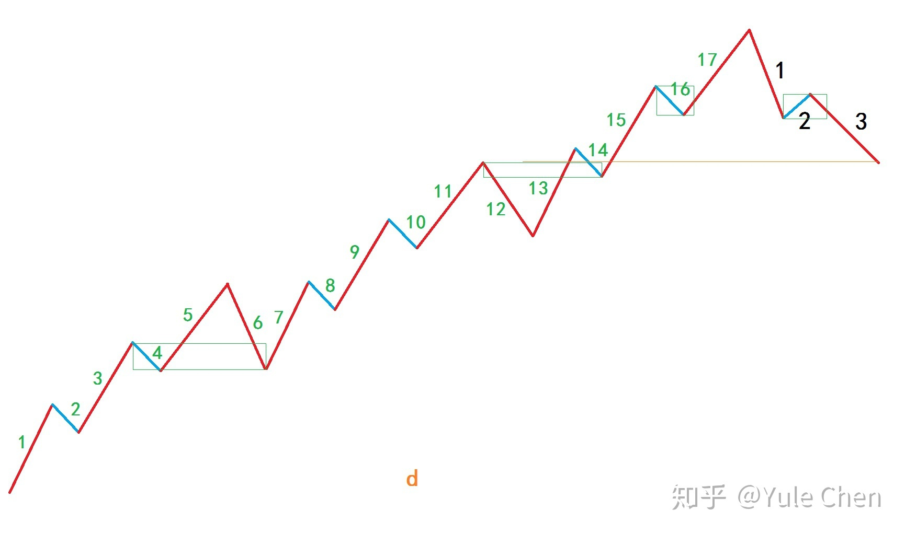

(2008-01-22 16:10:20)
本ID觉得，当人被刺激后，大概学习的效率会高点，所以就连续写课程了，让有缘人得之。【韶山映山红】6124见顶之后，大级别不新高的二卖，之后连续下跌，这一天又是跳空的长阴。】
要战胜市场，首先要了解市场的众生。市场是合力的，而合这力的不是机械，而是活生生的人。
市场中，最多数的，都是糊涂蛋，赚钱了不知道为什么，亏钱了不知道为什么，最后变青蛙了，也会说，井上面的天空好大，好复杂，怎么处理啊？哪里有拐杖啊？
几乎绝大多数的人，进市场来时，根本不知道市场是什么，然后就不断投入，最后有些输红眼了，砸锅卖铁也就进来了。
对于市场，本ID有一个观点，大概有点过分，但确实是对的。
市场，就是要0投入去赚钱。
很多人很关心ID的投资历史，当然，有很多事情，不能说，因为涉及太多的东西。但有一样事情，本ID是可以说的，就是本ID在市场中，等于没有投入过1分钱。
本ID第一笔钱是90年初新股赚回来的，【韶山映山红】原始股的年代。】那时候买新股的钱，很不好意思，不是本ID的，【韶山映山红】坑爹的。】上市后，就把本还了，剩下的利润，就是本ID在市场中的第一笔钱，从此，无论本ID操作的钱有多少，本ID从来没有在市场中投入过1分钱。
【韶山映山红】上海证券交易所是1990年底成立的。缠师第一桶金是打新，不是炒股。“本ID第一笔钱是90年初新股赚回来的，”90年初，显然是早期的柜台交易。A股交易的先驱是飞乐音响与延中实业，时间是1986年。
1984年11月14日，飞乐音响，第一支公开发行的股票。
1986年9月26日，飞乐音响与延中实业两只股票率先在中国工商银行上海信托投资公司静安证券部进行柜台交易，这是我国改革开放以来第一次股票买卖交易。
1987年9月27日，第一家证券公司——深圳经济特区证券公司成立。
1988年4月11日，深发展普通股挂牌上市买卖。
1990年11月26日，上海证券交易所成立。 1989年12月2日，时任上海市委书记的朱镕基提出，建立证券市场，引进外资银行。 1990年2月26日，上海市政府关于开发浦东的请示报告里提出建立上海证券交易所，试探北京。3月26日，朱镕基出访美国新加坡，回程路过香港，在记者招待会上透露，年内建立上海证券交易所。
1990年12月19日，上海证券交易所开业，首批39个品种上市，其中包括8个股票和31个债券，其中8个股票是600601延中实业，600602真空电子，600651飞乐音响，600652爱使股份，600653申华实业，600654飞乐股份，600655豫园商城，600656浙江凤凰，也被称为“老八股”。
1990年12月1日：深圳证券交易所成立。
1990年12月19日：上证指数诞生的第一天。基点为100点，当天开盘96.05点，最低95.79点，这也成为一个永远看不见的点位，当日收于最高99.98点之后在年前的最后几个交易里，整个市场无量空涨，1990年收于127.61点 】
【韶山映山红】上海是最早比较系统进行企业股份制改造和股票公开发行试点的城市。从1984年至1986年11月，由于一批新的集体企业筹集资金的需要，企业债券和股票开始在上海出现。1984年，上海飞乐音响有限公司在上海发行股票50万元。1987年1月，上海真空电子公司发行股票2亿元，这是上海第一家国营企业发行股票。1991年，经中国人民银行批准，上海兴业房产股份有限公司、上海飞乐音响股份有限公司、上海爱使电子股份有限公司、上海浦东大众出租汽车股份有限公司、上海异型钢管股份有限公司、上海众城实业股份有限公司向社会公众公开溢价发行股票1.3亿元，其中个人股3370万元。此外，经国务院同意，中国人民银行批准，上海真空电子器件股份有限公司向海外投资者发行人民币特种股票（B种股票）l亿元（l00万股），这是我国最先发行的B股，也是第一家以海外参股投资形式开办的中外合资企业。】
【韶山映山红】1987年5月，深圳发展银行率先向社会发行股票。后来有万科、金田、蛇口安达和原野等公司发行股票。 深圳于1988年开始进行股票交易市场试点，最早是深圳经济特区证券公司红荔路营业部开办了深圳五家企业股票的柜台交易。这五家企业是深圳发展银行、深圳金田股份有限公司、深圳万科股份有限公司、深圳蛇口安达运输股份有限公司和深圳原野股份有限公司。】
当然，现在还按90年代初那种疯狂状态是不行了，但本ID还是觉得，你投入市场的钱，一定不能无限增加。
如果你第一笔投入100万，还不能赚到钱，你还投什么啊？你100万都搞不好，难道想搞100万的平方啊？
只要你有稳定的技术和操作，初始投入多少根本不重要。就算你只有1万元，10次翻倍操作后也就1000万了，【韶山映山红】2的10次方是1024。】而即使你开始有1000万元，10次连续的亏损后，你也没有多少钱了。
问题不是投入的多少，而是技术与操作。所有把市场当赌场的，最终的命运都只能是悲惨的。
对于市场上的众生，本ID给的第一忠告就是，把你的第一笔钱运作好，然后把本拿走，最后把这利润变成巨大的数字，这才是市场中的真正操作。
市场上的真正成功，是以十年为单位的，【韶山映山红】一年十倍的股神满地走，十年一倍的高人有几何？】无论你开始有多少钱，10年都足以让你变成上一个足够大的台阶，一笔0成本、0投入的钱，让你在市场中无比轻松。
绝大多数的人，因为贪婪而不断投入，又因为恐惧而落荒而逃。但市场，进来一次，几乎就很难再离开了。落荒而逃的，最终都是在高潮中又被忽悠进来，最终还是青蛙给煮了，这种事情，难道还少见？
还有不少的，以评价别人为事情，市场中，唯一的评价，就是你的操作，有那时间，练习一下操作吧，这才是市场中人干的事情。
市场，不是选秀场，别把自己当超男超女或它们的粉丝。市场里，是刀和血，超男超女和粉丝，只有被煮的份。
市场中，唯一需要考虑的，就是对操作水平的提高，这是一切的根本。别人，最多是你的陪练。
学习理论，一定要彻底穷源，然后在实践中不断升级，工夫是要靠磨练出来的。
用你的第一笔钱，一笔绝对不影响你生活的钱，创造一个操作的故事，这就是市场的操作者。
操作的层次很多，这是一个不断修炼的过程，把基础弄好了，你可以不断前行。市场的机会无穷，做一次电梯不怕，关键是电梯之后，你能不再电梯。
修炼自己，市场中生存，别无他法。
2019年10月14日 23:13 来自 微博 weibo.com
“老湿很喜欢讲大道理”，是不是像个老夫子？
我儿子每次听我讲道理都头疼，我40根本不跟我讲道理，所以，便宜你们了
就算知道左耳朵进右耳朵出，可是我讲得很开心啊！

老湿不是教书先生，讲道理也不是为了说服谁认同，单纯只是为了爽。
为了证明除了运气，老湿做事还是“有据可循，有分寸”的。
不能落实的大道理，不讲也罢；不能获益的大道理，不听也罢；这么多条条框框，约束自己其实是为了保护自己造福自己 —— 大智若愚，利己利人。这原则必须要明白。否则，空讲道理人云亦云，读的书都让狗啃了。
年轻时候，很多事想不明白，但还是“要试”。现在，很多事都想明白了，有的做有的不做。
不管怎么讲，我肯定受益的，也是把“大道理”落实了的。如果与旁人不同，这或许算一条。
道理谁都会讲，特别是大道理。但持续做到，尽心去做，还是要真的弄懂弄透，知道自己能得到什么好处。
不是因为“律己”是对的，也不是因为“律己”是好的，而是因为“律己”看似约束，自己却得益最大。
人嘛，都不傻，但未必看得透。
老湿很现实的。看不到好处的道理，哪怕圣贤讲的，也是关我屁事。
无论什么话题，讲到最后都是“哲学问题”
今天还在说“套牢如失恋”，你付出越多越无法直面失败的结果…… 各种挣扎各种期盼，但这种单方面挽留，依然与结果无关。
遭遇惨痛割肉后，你不会很快就投入下一段“交易”中。首先是各种怀疑各种反思，其次就算有新的对象也会不断和前任做对比。
最后你变得很吝啬，不愿意再付出，总想获得超额回报才能心理平衡，然而，符合条件的傻瓜肯定很少。
说到底，这都是心理调整没有做好，给自己步步挖坑。
客观认识到以下几点是非常重要的
1 看对眼容易，能够最终完成你预期的完美交易非常少。所以，盈亏和眼光，要分开看待。
没有哪只票是独一无二的，你只需要鉴别适合你还是不适合你。不适合你的票很多，适合你的票也很多，记住这一点。
2 付出与回报预期要平衡。仓位重，只是说明你对回报有高要求，并不代表你肯定会有收获。任何时候都不该孤注一掷。
对方比你付出的多，你就要相应调高仓位。对方总是有所保留，你就不要只会傻傻付出。长期不平衡，总有一天，你会心理失衡。换做对方，也是一样。平衡，才能持久。
3 无论你失败多少次，从概率上而言，和你下一次成功与否是无关的。没有一种方法能给予你保证，如果有，这不科学。
能够提高的是胜算，而非结果。如果你连勇气都没有了，如果你只剩下勇气，这都是不行的。所以能够帮助你保住本金的方法才是最重要的。
不玩，不会输，也不会赢。太消极，没有意义。太积极，也没有意义。学会让自己正常一点，保持正常，保持平衡，保住本金的前提下，一次次做尝试。
这就是正常的姿势。
【网文】伟大投资者的七个特质
(2014-11-04 10:17:57)
本文的作者马克·塞勒尔是对冲基金SellersCapital Fund创始人，曾在晨星担任首席股权战略师，以下是他2008年在哈佛所做演讲：
我即将告诉你们的是：我不是来教你们怎样成为一个伟大投资者的。相反，我是来告诉你们，为何你们中只有极少人敢奢望成为这样的人。如果你花了足够的时间去研究查理·芒格、沃伦·巴菲特、布鲁斯·博克维茨、比尔·米勒、埃迪·兰伯特和比尔·阿克曼等投资界巨子，你们就会明白我是什么意思。
我知道这里的每一个人都有超越常人的智力，并且是经过艰苦的努力才达到今天的水平。你们是聪明人中最聪明的人。不过，即便我今天说的其他东西你们都没听进去，至少应该记住一件事：你们几乎已经没有机会成为一个伟大的投资者。你们只有非常、非常低的可能性，比如2%，甚至更少。这已经考虑到你们都是高智商且工作努力的人，并且很快就能从这个国家最顶级的商学院之一拿到MBA学位的事实。如果在座的仅仅是从大量人口中随机抽取的一个样本，那么成为伟大投资者的可能性将会更小，比如5000分之一。你们会比一般投资者拥有更多优势，但长期来说你们几乎没有机会从人群中脱颖而出。其原因是，你的智商是多少、看过多少书报杂志、拥有或者在今后的职业中将拥有多少经验，都不起作用。很多人都有这些素质，但几乎没有人在整个职业生涯中使复合回报率达到20%或25%。
我知道有人会不同意这个观点，我也无意冒犯在座诸位。我不是指着某个人说：“你几乎没有机会变得伟大了。”这个房间中可能会出现一两个能在职业生涯中实现20%复合回报率的人，但在不了解你们的情况下很难提前断言那会是谁。
往好的方面讲，虽然你们中的大多数人都无法在职业生涯中达到20%的复合回报率，但你们依然会比普通投资者做得好，因为你们是哈佛的MBA。一个人能学会如何成为一般级别之上的投资者。如果你们聪明、勤奋又受过教育，就能做得足够好，在投资界保住一份高薪的好工作。不用成为伟大投资者，你们也可以赚取百万美元。通过一年的努力工作、高智商和努力钻研，你就可以学会在某几个点上超越平均水平。因此无须为我今天说的话而沮丧，即使不是巴菲特，你们也将会有一份真正成功且收入不菲的职业。但是，你们不可能永远以20%的复合回报率让财富增值，除非你的脑子在十一二岁的时候就有某种特质。我不确定这是天生的还是后天习得的，但如果你到青少年时期还没有这种特质，那么你就再不会有了。在大脑发育完成之前，你可能有能力超过其他投资者，也可能没有。来到哈佛并不会改变这一点，读完每一本关于投资的书不会，多年的经验也不会。如果你想成为伟大投资者，那些只是必要条件，但还远远不够，因为它们都能被竞争对手复制。
作个类比，想想企业界的各种竞争策略吧。我相信你们在这里已经上过或者将要上战略课程。你们或许会研习迈克尔·波特的文章和书籍，这是我在进商学院之前就自学过的。我从他的书里受益匪浅，在分析公司时仍然总会用到这些知识。
现在，作为公司的CEO，什么样的优势才能使你们免受残酷的竞争？如何找到合适的点来建立起广泛的巴菲特所说的“经济护城河”？
如果技术是你唯一的优势，那么它并不是建立“护城河”的资源，因为它是可以、而且最终总是会被复制的。这种情况下，你最好的希望是被收购或者上市，在投资者认识到你并没有可持续性优势之前卖掉所有股份。科技是那种寿命很短的优势。还有其他的，像一个好的管理团队、一场鼓动人心的广告行动，或是一股高热度的流行趋势。这些东西制造的优势都是暂时的，但它们与时俱变，而且能被竞争者复制。
“经济护城河”是一种结构性（structural）的优势，就像1990年代的西南航空。它深植于公司文化和每一个员工身上，即使每个人都多少知道西南航空做的是什么，却没有别人能复制。如果你的竞争者知道你的秘密却不能复制，那就是一种结构性的优势，就是一条“护城河”。
在我看来，实际只有4种难以复制且能持久的“经济护城河”。一种是规模经济，沃尔玛、宝洁、家得宝就是例子。另一种资源是网络效应，如eBay、万事达、维萨或美国运通。第三种是知识产权，比如专利、商标、政府许可或者客户忠诚度，迪斯尼、耐克和Genentech即是此中典范。最后一种是高昂的用户转移成本，薪资处理服务公司沛齐（Paychex）和微软就受益于此，因为用户转向其他产品的成本实在高昂。
就像公司要么建立一条“护城河”，要么就忍受平庸，投资者也需要一些超越竞争者的优势，否则他就沦为平庸。
现在有8000多家对冲基金和1万家共同基金，每天还有数百万计的个人投资者试图玩转股票市场。你们如何比这些人更有优势？“护城河”由何而来？
首先，大量阅读书籍、杂志、报纸并不是建立“护城河”的资源。任何人都会读书。阅读自然无比重要，但不会赋予你高过他人的强劲优势，只能让你不落在别人后面。投资界的人都有大量阅读的习惯，有的人阅读量更是超群，但是我不认为投资表现与阅读数量之间呈正相关关系，你的知识积累达到某个关键点后，再多阅读就会呈收益递减效应。事实上，读太多新闻反而会伤害你的投资表现，因为那说明你开始相信记者们为了报纸销量而倾泻的所有废话。
另外，任凭你是顶尖学校的MBA，或者拥有注册金融分析师资格、博士学位、注册会计师证书等等数十种可能得到的学位和证书，都不可能让你成为伟大的投资者。哈佛也无法把你教成这样的人，西北大学、芝加哥大学、沃顿商学院、斯坦福也不能。我要说的是，MBA是学习如何精确地获得市场平均回报率的最好途径。你可以通过MBA的学习极大地减少前进道路上的错误。这经常能使你得到丰厚的薪水，即使你离成为伟大投资者越来越远。你不可能花钱买到或是通过读书学习而成为伟大的投资者。这些都不会让你建起“护城河”，只是让你更容易获得进入这场赌局的邀请而已。
经验是另一件被高估的事情。经验的确很重要，但并不是获得竞争优势的资源，它仅仅是另一张必需的入场券。经验积累到某一点后，其价值就开始收益递减。如果不是这样，那么60岁、70岁和80岁就应该是所有伟大资金操纵者的黄金时代。我们都知道事实并非如此。因此一定程度的经验是玩这个游戏所必需的，但到了一定时候，它就不再有更多帮助。它不是投资者的经济“护城河”。查理·芒格说过，你们可以辨别出谁能正确地“理解”，有时那会是一个几乎没有投资经验的人。
因此什么是投资者必备的竞争优势呢？就像一个公司或者一个行业，投资者的“护城河”也应该是结构性的。它们与一些心理学因素有关，而心理因素是深植在你的脑子里的，是你的一部分，即使你阅读大量相关书籍也无法改变。
我认为，至少有7个特质是伟大投资者的共同特征，是真正的优势资源，而且是你一旦成年就再无法获得的。事实上，其中几个特质甚至丝毫没有学习的可能，你必须天生具备，若无就此生难寻。
第一个特质是，在他人恐慌时果断买入股票、而在他人盲目乐观时卖掉股票的能力。每个人都认为自己能做到这一点，但是当1987年10月19日这天到来的时候（历史上著名的“黑色星期一”），市场彻底崩溃，几乎没人有胆量再买入股票。而在1999年（次年即是纳斯达克大崩盘），市场几乎每天都在上扬，你不会允许自己卖掉股票，因为你担心会落后于他人。绝大多数管理财富的人都有MBA学位和高智商，读过很多书。到1999年底，这些人也都确信股票被估值过高，但他们不能允许自己把钱撤离赌台，其原因正是巴菲特所说的“制度性强制力”。
第二个特质是，伟大投资者是那种极度着迷于此游戏，并有极强获胜欲的人。他们不只是享受投资的乐趣——投资就是他们的生命。他们清晨醒来时，即使还在半梦半醒之间，想到的第一件事情就是他们研究过的股票，或者是他们考虑要卖掉的股票，又或者是他们的投资组合将面临的最大风险是什么以及如何规避它。他们通常在个人生活上会陷入困境，尽管他们也许真的喜欢其他人，也没有太多的时间与对方交流。他们的头脑始终处在云端，梦想着股票。不幸的是，你们无法学习这种对于某种东西的执迷，这是天生的。如果你没有这样的强迫症，你就不可能成为下一个布鲁斯·博克维茨的创始人，选股思路深受巴菲特影响，组合集中、低换手率、很少越界。
第三个特质是，从过去所犯错误中吸取教训的强烈意愿。这点对于人们来说是难以做到的，让伟大投资者脱颖而出的正是这种从自己过去错误中学习以避免重犯的强烈渴望。大多数人都会忽略他们曾做过的愚蠢决定，继续向前冲。我想用来形容他们的词就是“压抑”。但是如果你忽略往日的错误而不是全面分析它，毫无疑问你在将来的职业生涯中还会犯相似的错。事实上，即便你确实去分析了，重复犯错也是很难避免的。
第四个特质是，基于常识的与生俱来的风险嗅觉。大部分人都知道美国长期资本管理公司（1990年代中期的国际四大对冲基金之一，1998年因为俄罗斯金融风暴而濒临破产）的故事，一个由六七十位博士组成的团队，拥有最精妙的风险分析模型，却没能发现事后看来显见的问题：他们承担了过高的风险。他们从不停下来问自己一句：“嗨，虽然电脑认为这样可行，但在现实生活中是否真的行得通呢？”这种能力在人类中的常见度也许并不像你认为的那样高。我相信最优秀的风险控制系统就是常识，但是人们却仍会习惯听从电脑的意见，让自己安然睡去。他们忽视了常识，我看到这个错误在投资界一再上演。
第五个特质是，伟大的投资家都对于他们自己的想法怀有绝对的信心，即使是在面对批评的时候。巴菲特坚持不投身疯狂的网络热潮，尽管人们公开批评他忽略科技股。当其他人都放弃了价值投资的时候，巴菲特依然岿然不动。《巴伦周刊》为此把他做成了封面人物，标题是“沃伦，你哪儿出错了？”当然，事后这进一步证明了巴菲特的智慧，《巴伦周刊》则变成了完美的反面教材。就个人而言，我很惊讶于大多数投资者对他们所买股票的信心之微弱。根据凯利公式（Kelly Formula，一个可用于判断投资和赌博风险的数学公式），投资组合中的20%可以放在一支股票上，但很多投资人只放2%。从数学上来说，运用凯利公式，把2%的投资放在一支股票上，相当于赌它只有51%的上涨可能性，49%的可能性是下跌。为何要浪费时间去打这个赌呢？这帮人拿着100万美元的年薪，只是去寻找哪些股票有51%的上涨可能性？简直是有病。
第六个特质是，左右脑都很好用，而不仅仅是开动左脑（左脑擅长数学和组织）。在商学院，我曾经遇到过很多天资聪颖的人。不过主修金融的人，写的东西一文不值，他们也无法创造性地看待问题，对此我颇感震惊。后来我明白了，一些非常聪明的人只用一半大脑思考，这样足以让你在世上立足，可是如果要成为一个和主流人群思考方式不同的富有创新精神的企业投资家，这还远远不够。另一方面，如果你是右脑占主导的人，你很可能讨厌数学，然后通常就无法进入金融界了。所以金融人士很可能左脑极其发达，我认为这是个问题。我相信一个伟大投资家的两边大脑都发挥作用。作为一个投资家，你需要进行计算，要有逻辑合理的投资理论，这都是你的左脑做的事情。但是你也需要做一些另外的事情，比如根据微妙线索来判断该公司的管理团队。你需要静下心来，在脑中勾画出当前情势的大图景，而不是往死里去分析。你要具备幽默感、谦卑的心态和基本常识。还有最重要的，我认为你也得是一个好的写作者。看看巴菲特，他是商业世界里最杰出的写作者之一，他同时也是古往今来最好的投资家之一绝非偶然。如果你无法清晰地写作，我认为你也不能清楚地思考。如果不能清楚地思考，你就会陷入麻烦。很多人拥有天才般的智商，却不能清楚地思考问题，尽管他们心算就能得出债券或者期权的价格。
最后，最重要的，同时也是最少见的一项特质：在投资过程中，大起大落之中却丝毫不改投资思路的能力。这对于大多数人而言几乎是不可能做到的。当股票开始下跌，人们很难坚持承受损失而不抛出股票。市场整体下降时，人们很难决定买进更多股票以使成本摊薄，甚至很难决定将钱再投入股票中。人们不喜欢承受暂时性的痛苦，即便从长远来看会有更好的收益。很少有投资家能应对高回报率所必须经历的短期波动。他们将短期波动等同于风险。这是极不理性的。风险意味着你若押错了宝，就得赔钱。而相对短时期内的上下波动并不等于损失，因此也不是风险，除非你在市场跌到谷底时陷入恐慌，被损失吓得大乱阵脚。但是多数人不会以这种方式看问题，他们的大脑不容许他们这么想。恐慌本能会入侵，然后切断正常思考的能力。
我必须申明，人们一旦步入成年期就无法再学到上述特质。这个时候，你在日后成为卓越投资者的潜力已经被决定了。这种潜力经过锻炼可以获得，但是无法从头建立，因为这与你脑组织的结构以及孩童时期的经历密切相关。这不是说金融教育、阅读以及投资经验都不重要。这些很重要，但只能让你够资格进入这个游戏并玩下去。那些都是可以被任何人复制的东西，而上述7个特质却不可能。
【网文】建立一套完整的投资体系
集思录访谈（资水）-
2019-12-01 11:13
感谢 @打新交朋友 的邀请，借论坛宝地分享一下我的投资经历和投资体系。
【自述】
我是资水，今年45岁，在湖南资水河畔小县城长大，故取网名资水，现居上海，在一家上市公司从事企业战略工作。
我是2006年因公司配发的股权激励解锁而入市的，前十年都是小资金投入，重心还是放在本职工作上。也许潜意识里觉察到自己未来可能要以投资为生，工作之余我做了大量的研究，试图寻找资本市场赚钱的真理。我研究了所有想到的投资问题和所有听到的投资策略，包括技术面的、基本面的、宏观政策面的、博弈面的等等。十年时间里，每年都有相当长的一段时间，短的有两、三个月，长的有八个多月，我每天晚上就是做各种回测和各种分析，直到半夜。研究的问题有结论时，我都会给自己写一篇简单的分析报告，比如大盘底部和顶部特征、银行业估值排名等等，多年下来写了有七十多篇吧，其中最重要的一篇《根据技术指标炒股，将获得股市平均收益》，我整理出来发到了集思录上。
头十年我没挣到多少钱，但也不是没有收获，经历了07、09、15年三波牛熊，获得了市场感觉，对技术面尤其精通。多年的研究为我打下了扎实的基本功，我清晰地感觉到水平突破在即。在2015年年中的某一天，那时正好是A股5000多点最喧嚣的时候，午休的时候我绕湖散步，问了自己一个问题：“世界上最好的票是哪一支？”几乎没有思考，我就给出了答案：“所有知道底、知道顶、知道时间的票都是最好的票，我只要在底部买入，在时间范围内耐心拿着，在顶部卖出，就是稳赚不赔的。”
这一瞬间我就悟道了，那种感觉是如此清晰、如此透彻，就好像身边的迷雾刹那间消散，一切都看得清清楚楚、纤毫毕现，世界从此不同了！后来我才知道德隆专家早有类似的表述，即“三个知道”，但我的表述和他有细微的不同，德隆说的是“知道能涨多少，知道会跌多少，知道投资的期限有多长”，那是投资者已经选择了某条赛道（某个股票或者某个品种），在那个赛道、在那个时点看前面的路况；而我的“知道底、知道顶、知道时间”是连赛道都没选，先站在场外看看每一条赛道从头到尾的路况，哪条通畅才选哪条，这隐含了时机选择和大类资产配置的意思。
于是我的整个投资体系就建立起来了，
第一，所有品种，包括股、债、大宗、黄金、现金，都有周期，抄大底，逃大顶，这就建立了时机选择的概念；
第二，不同品种的周期是不一致的，哪个见底了就买哪个，这就建立了大类资产轮动的概念；
第三，在一个周期内，不同价位的风险是不一致的，越往上风险越高，越往下风险越低，这就建立了风险管理和仓位配置的概念；
第四，不同标的的振幅和时间不一致，比如银行股一年的振幅可能就是30%，而科技股一年的振幅可能是200%，这就建立了到期收益率与预期管理的概念。
这些概念，全都是投资中的重大战略问题，在这一瞬间就解决了。至于今天买卖什么，依据技术面还是基本面，那都是战术问题，细枝末节，在操作中慢慢细化即可。
当天下午我就把所有流动资金打入账户，开启了半职业投资的历程，即今后以投资作为主业，投入主要精力和全部资金，把工作只作为副业。当然，做这个决定也是有一些现实背景：新上来的领导比我年轻几岁，意味着41岁的我，职业生涯已经进入尾声，而整个行业和我所在的公司，也偶尔出现危机，时不时来一个假摔，我早就意识到不能靠打工活一辈子，必须得找一条活路出来。我对自己说：“那就先试试半职业投资吧，看自己是不是这块料，第一，能不能靠股市活？第二，能不能靠股市富？第三，能不能靠股市有所成就？”
不知是运气还是实力，刚开始职投就抓住了一个重大机会：分级A，我看上分级A不是因为折溢价套利和轮动，而是根据统计数据，它的底清清楚楚地是0.78，它的顶清清楚楚地是0.92，一年时间就可实现18%的收益，这是完美的知道底、知道顶、知道时间的标的，这就是世界上最好的票！在分级A跌到0.78的时候我把几乎全部资金都买成分级A，手头只留了5万现金，后面的事大家都知道了，在A股从5000多点崩盘的时候，做分级A的人赚得盆满钵满，我自然也不例外。
资本市场有一个奇怪的规律，一旦真正品尝过挣钱的滋味，就会源源不断地挣钱，正如《圣经》中马太福音说的：“凡有的，还要加给他，叫他多余；没有的，连他所有的也要剥夺。”真正挣过钱的人，对靠谱的挣钱方法有着异乎寻常的敏锐，随着研究的深入，后面的几年里，我积累的套路逐渐丰富起来，修炼了低估、成长、固收、周期、轮动、套利、博弈等七种套路，这都是很朴素的套路，我认为赚钱的套路就应该是朴素的，真正的功力体现在运用每个套路时对机会的把握有多大。
这七个武功套路中，我专注于精研前两个，即低估和成长，这两个套路都需要精研基本面，我又开始了埋头苦修，2018和2019年每年研读400份以上的财报和行业分析报告。目前我的低估套路已经大成，炼成了绝世武功，我自诩为职业抄底员，抄到过油气、港股、白银、煤炭、造船的大底，2018年10月在A股2450点时满仓抄了大底，获取了丰厚的收益。
有了丰富的武功套路，选择面就很宽，一般总能找到几个机会，或大或小，大部分时间都有钱赚，而且采用了分仓制，每个机会控制好仓位，降低品种之间的相关性，避免了系统性风险。因此我的收益曲线的回撤是很小的，每次新高后的最大回撤从未超过6%，对于一个以权益投资为主的选手来说算是不错的成绩了，我从未因持仓而产生过焦虑。对我来说，赚钱其实是研究的额外奖励，我特别享受多年来做研究的每个夜晚，漆黑宁静，专注沉浸，每发现一条规律，每寻求一个答案，心中欣慰莫名。探索未知，追求真理，实在是人生莫大的享受。
我的期望是十年十倍，即年化26%，职投五年过去了（其实是四年零五个月，因为我是2015年6月开始的），目前我的资金达到了2015年的3.3倍，年化收益27%，暂时达到了预期目标。而且这五年每年都实现了正收益，包括2018年是7%，我做到了稳定的复利增长。2019年的2月25日上证指数大涨5.6%，我实现了单日历史最大收益，这一天的收益已经和我在职场上一年的薪资相当，我其实已经达成了靠股市活的目标，后面能否靠股市富，我想也只是时间问题。而最后一个目标，能否靠股市有所成就，在于理论体系的建立和无私的分享和传播，从而实现社会价值，这个就是长远的事情了。
我对业余投资者的水平评估有自己的一套标准：
第一档是十分之一选手，特征是“盈利”，七亏二平一赚嘛，对风险和收益有感觉，能趋利避害，或者能坚持长期投资，守得到月圆花开；
第二档是百分之一选手，特征是“入道”，即建立了自己的投资体系，一般在市场上稳定盈利而且盈利100万以上；
第三档是千分之一选手，特征是“知道”，心中通透，什么都知道，有时甚至能预见风险和机会，未战而先胜，下手的时候就已经知道能取得多少收益，一般在市场上长期盈利500万以上，大部分职业投资者都是千分之一选手，我应该也达到了这个水平吧；
第四档是万分之一选手，那就是绝顶高手了，特征是“传道”，开宗立派，把独有的理论体系总结出来向大众传播，资金量倒不是决定性的，但一般也盈利了数千万元以上，集思录上就有几位大家熟知的万分之一选手。
我认为资本市场绝对没有运气一说，每一个能够取得长期复利收益的人，或者说合格投资者，或者说入门的人，都建立了一套完整、有效、逻辑自洽的投资体系，并且，按我的理解，每位合格投资者的投资体系应该都是相通的，即有相通的哲学信仰、相通的思维方式、相通的投资原则，只在具体套路上各有绝招。下面我来介绍我的投资体系。
【投资体系的整体框架】
2019-12-01 11:13
每一位合格投资者都建立了自己的投资体系，一个完整的投资体系框架大体上应该是这样的：
底层是对自我的认知，我为什么要做投资？我是否适合做投资？这是一个人最根本的驱动力。
其上是投资哲学，也叫投资信仰、底层逻辑，投资哲学是基于每个人的人生经历和对资本市场的观察，总结出来的一些宏观规律，不可证明，也无需证明，我们就是相信它们是对的，用来指导自己的投资操作。
再往上是思维方式，资本市场极其复杂，但总有规律，总有因果关系。人和人的思维方式真是千差万别，有些人究其一生也找不到市场规律。在这里我们强调科学思维，只有运用科学思维，才能认知市场，找到真理。
再往上是战略原则，这是投资活动中的共性的、重大的问题，包括方向选择、时机选择、如何管控风险、如何确定收益率等等。懂这些战略原则的，投资就开始入门了。
最上层是战术套路，即每个人掌握的具体的挣钱方法。每个人都有自己的套路啊，世界上可能有几千个套路，显然，一个投资者不可能掌握所有的套路，一般地，精研三、四个套路，就可以取得相当不错的长期收益了。
【自我认知】
2019-12-01 11:13
我为什么选择投资之路？我是不是适合投资？这是每位投资者都会问自己的问题。
投资其实不是一条很好的人生道路，原因大体有三：
第一，这条路的成材率太低，十年才能修完必修课，中间有无数种情况血本无归，毕不了业；
第二，患得患失，心理压力过大，容易产生心理问题；
第三，人际关系狭窄，社会价值低，大众普遍认为是不务正业，当同学和朋友或高官、或创业、或专家教授，荣誉加身，与他们相比，心中的落差是巨大的。
但投资的好处也是巨大的，如果入了门，实现复利增长，能快速实现财富自由和时间自由。其他职业都是手停嘴停，唯有投资这个行当，可以躺赚，一边周游世界，账户里的钱还在生钱，这不是梦寐以求的事情吗？
而且，投资是可以持续终生的事业，巴菲特和查理芒格两位老先生，一个90岁，一个95岁了，仍然活跃在世界资本市场之巅，这说明了持续的思考和学习、简单规律的生活、睿智豁达的心性，是可以有助于健康长寿的。
那么什么人适合做投资呢？如果想以投资为事业，我认为必须具备下面的四个特征：
1、对财富的极度渴望；
2、永不停止地思考事物本源；
3、不辞辛苦地亲手查找、验证和尝试；
4、丰富的人生阅历，对宏观政治、经济周期和行业兴衰有深刻的认知，对人性和博弈有理解。
这四个条件的要求非常高，达不到的人，不应该选择以投资为业。
其实投资的隐性门槛是极高的，一堆绝顶聪明而且变态勤奋的人在里面，我们凭什么战胜他们？只能是所有的知识都弄懂，比聪明人更聪明，比勤奋的人更勤奋，才有可能啊。
如果只是业余投资，那要么识人，选择好的基金经理打理，要么认死理，跟着几个好策略做到底，也能获得不错的收益。
每个人都会面临终极审判，我设想当我离世了去见上帝，上帝问我：“你为啥选了投资这条路？你活一辈子有什么价值？”
我会说：“我选择成为一名投资者，因为我很擅长，很喜欢。投资给我带来了财富，让家人过上了富足的生活。我秉持分享的理念，把自己的投资经验做了传播，帮助他人也增长了财富。”
【投资哲学】
2019-12-01 11:13
每个人入市，总归相信一些真理，来指导自己的操作。
就我个人来说，我相信五条真理：1、万物皆有周期；2、价值一定会被发现；3、流动性带来溢价；4、风险才有收益；5、穿帮不可避免。
1、万物皆有周期
农产品以年为周期（蛛网周期），工商存货以2~4年为周期（基钦周期），设备投资以6~10年为周期（朱格拉周期），房地产以20~40年为周期（库兹涅茨周期）。据美国经济研究局（NBER）的数据，20世纪以来美国一共有22次经济衰退，即美国经济以6年为一个周期。中国历代王朝更迭，大的王朝以200~300年为一个周期。
关于周期最经典的理论是《易经》，乾卦卦辞是这样说的：潜龙勿用、见龙在田、或跃在渊、飞龙在天、亢龙有悔。非常优美的用词，被金庸先生在《射雕》里用了。
一般认为中国股市是7年一个周期，这是07年和14年两个大牛市的时间间隔，新一代韭菜的生长也需要7年吧，那下一个牛市是不是2021年？这让我想起一个笑话，一个财主花了一百两银子请先生为儿子开蒙，第一天先生教了个“一”字，第二天教了个“二”字，财主寻思一字就是一横，二字就是两横，是不是三字就是三横？第三天先生果然教了个三字，财主大怒，原来写字这么简单，先生收这么多钱真是岂有此理！立刻给儿子退学，其后让儿子给朋友写信，却看见儿子没有动笔，拿把梳子在纸上描呢，儿子苦着脸道：“对方姓万，我都写了三张纸了，第一个字还没写完呢...”
预测下一个大牛市是2021年的，就是犯了机械教条主义的错误，周期律的精华不是用来精确预测时间的，而是一种哲学理念，阐述了一个否极泰来、盛极而衰的客观规律。
周期律是资本市场最重要的哲学，我强烈地反对机械的价值投资者的观点：“满仓轮动”、“别管大盘，永远持有好企业，长期带来丰厚的回报”，这是一碗大大的鸡汤，讲这些话的人，市场会教育他们做人。
周期律在关键时刻，会成为投资者最后的信仰。2018年10月上证2450点时我满仓抄底，拿到2019年4月3200多点，收益丰厚。2450点那是股市最黑暗的时候啊，收盘下来都没有人谈股市，恐慌到了鸦雀无声的程度，我有6成的底仓，损失也不小，但还是果断打了满仓，这是考验信仰的时刻，我坚信：“熊市一定会过去的，牛市一定会到来的，周而复始，是资本市场的铁律！”
2、价值一定会被发现
股价低估了，一定会估值回归，企业挣钱了，股价最终会上涨，这条哲学是价值投资的基本逻辑。
价值投资流派产生了最多的大师，这条路是投资界最宽阔、最笔直的路，就是武林中最正宗的功夫。我认为价值投资最大的好处是方法论不会过时，越老功夫越厉害，巴菲特能在5分钟内判断一家企业的价值，这是他几十年投资下来积累了一把估值的尺，谁值钱谁不值钱量得清清楚楚。而有些其他的方法就容易失效，比如监管层出台政策让分级基金退出，我们好不容易练成的分级基金的套利、轮动等策略就失效了。
但价值投资太难了！我认为是所有投资方法中最难的，要弄懂一门门生意，谈何容易！很多大佬终其一生都在研究企业价值。对普通投资者来说，价值投资有四大门槛：阅读财报的门槛、排雷的门槛、预测大盘走势的门槛、理解资金博弈的门槛，可能很多人都想不到后两个也是价投的门槛，是的，大盘走势和资金博弈是个股短期走势的主导因素，如果没有建立对这两个因素的认知，当个股走势与自己判断不相符的时候，很容易情绪失控，否定价投逻辑。
阅读财报和排雷是门苦功夫，但我信奉“做难事必有所得”，我决定啃下来，这两年读了很多财报，受益巨大，我开始建立自己对于企业估值的尺子，虽然现在还做不到5分钟判断价值，但已经可以做到5分钟排除问题企业，我在个股上没有踩过雷。
3、流动性带来溢价
A股交投活跃，溢价高，很多企业从海外私有化回来上市，圈的钱比美国比香港高了好多倍，这就是流动性带来的溢价，我们要理解这个事情。
很多人喜欢B股和港股，估值低，这可能掉入了低估值陷阱，B股港股与A股存在折价，但只要流动性没有改善，折价可能会一直也不会收敛，所以，选择B股和港股，未必能获得比A股更高的收益。
2018年A股全年大跌，与金融去杠杆有直接关系，流动性收缩带来估值下移，很多人已经深刻地领教到了。从2018年2月开始，一连串的清资管、破刚兑、去货币化棚改，展示了强硬的去杠杆姿态，市场也从3500点一路下行。我想起了国泰君安首席策略师王成和韦笑的大作《策略投资》中讲的影响股价有三个因素：业绩、估值和流动性，意识到了流动性风险，在3200点时把仓位降到了2成，躲过了全年的大部分跌幅。《策略投资》是一部很棒的著作，代表了机构投资者的水平，建议投资者去研读一下。
4、风险才有收益
自从徐大为出版了《低风险投资之路》后，低风险投资的概念就盛行起来。我按照《低风险投资之路》里介绍的套路尝试了很多次，却基本没有挣钱。我意识到，如果有一个挣钱的好机会，风险又低，长时间不被人发现，是不现实的。我更进一步地认为，所有品种，如果风险一致，收益也应该差不多，这个观点是得到有效市场理论支持的。
市场长期是有效的，短期却是无效的，有人不断寻找不同市场定价时间差和对规则认知不一致造成的短暂机会，这构成了套利的理论基础。但套利的问题是一旦公开立刻失效，没有一种套利法是持久的。
我是另一个思路：要想追求更高的收益，得主动去追求风险。有风险，才有好价格，然后才有好收益。风险其实不是一个贬义词，而是一个中性词，关键在于风险的评估，在一片唱衰声中，评估出风险其实没那么大，然后就有了高额的收益，这是我认为的低风险投资的真谛。
5、穿帮不可避免
黑天鹅一定会发生，市场一定会崩溃，再好的投资体系，一定会有穿帮的一天。海龟交易法的投资大师丹尼斯，长期资产管理公司（LTCM）的两位诺贝尔奖创始人，最后都穿帮了，我们普通投资者，又怎么能躲得过黑天鹅呢？
穿帮不可避免，万一的事情其实必会发生，这是风控的底层逻辑。既要仰望璀璨的星空，也要注意脚下的无底深渊，永远都把风险摆在第一位，通过分仓、对冲、测量市场温度等一系列原则手段降低风险，即便遭遇穿帮，也不受重创。投资是一场长跑，有一句话叫做“坚持投资三十年的，必成巨富！” 我们只要在市场上活着，活得够久，就一定会成为巨富。
【网文】清理思维
2015-05-01 07:59
同学们在博客的提问，经常是让人无语。有的时候不是不回答。是没办法回答。
比如娇在3月1博客发一个美元日级别背驰段的大红包。3月19发个日级别转折的大红包。外汇100的杠杆。同学们做外汇的爽了吧。现在还在走这个日级别下。不过是做更高级别的3买。
但是下面的留言都是千奇百怪的。
比如3月19号那个转折。最早发现小转确认是在半夜。总不能不睡觉。我起来第一时间就发博客。
同学们有留言。啊 这怎么该判断转折啊，MACD黄白线新高啊。
我记得以前写过了一篇文章说过缠论与MACD。难道没有MACD就不判断转折了/
多空力度对比是本质。总是拘泥一些形式僵化的理解，还背什么驰什么。
一些反向力度弱的，MACD下拉不到0轴，再次上涨指标黄白线就非常容易新高。但是不影响转折的判断。
记得彪哥说过柱子面积和黄白线两个符合一个就可以，两个都符合就更标准了这一句么。
还有小转大。有个被做期货的看成是大哥的人说的什么判断小转先看高级别的MACD有死叉的前兆，那小级别就非常容易小转大。这种垃圾文字还听说经常在呱呱被人朗诵。去他的。
小级别的走势转折才能引发大级别的指标变化。
小转大不是很复杂。
常规转折是多空力温和较量后出现转折。
小转大是一方突发变量，力竭而转折。
转折只有这两种。和物理学和生活中的力学没什么两样。
多空交战。多头前面用力过猛。常规走势扛住空头力量后再次多头创出新高。而多头前面过猛，后面不济。那就创不成新高。3买转2卖。此为小转价格表现一种。其他三种同学们实盘慢慢体会。
不知道有几个人理解小转大课文中娇的加注。
记得彪哥说过小转大不复杂一样看成中枢震荡。那意思就是一样的围绕中枢看多空力度，
娇也可以和你们绕理论，这样那样的。但是娇怎么绕都心如明镜。而你们几下就绕晕了。
就像3买卖的力度为什么大？常规道氏理论定义趋势就是高低点下移。用缠论知道他还是有缺陷，中枢震荡也可以高低点下移。但是出3买卖，那就是彻底强化了高低点上下移动 的趋势。所以力度大。
还有就是线段的问题。娇看去线段那是缠论中最简单的东西了。有明确定义啊。这么多人迷糊。
很大部分是彪哥前面说着后面补充导致前后论述稍有矛盾造成的。你只要有一颗明心。不要把彪哥当神。知道他是个人，哪天喝多了就大舌头小错难免。不就行了。
线段的2种情况。他的划分也是考量了多空的力度表达。其实和走势分解没什么不同啊。
第一种下线段为例。空头发难一笔下破前高。多头反抗一笔。空头再次发力破新低。这种多空力度表达很清晰。所以上线段结束。
第二种有特征序列分型，一笔没有破前高。这样子可以新高延续多头力量，也可以转折。
所以彪哥用了下线段的特征序列底分型的多头力量表达来确认上线段形成。去推下线段成立。再去
反推原来那个上线段成立。用的是反推论证。考虑的就是小转的多空力度情况。
很多人觉得娇原创文章不断的提多空本质，太抽象，不愿意看。只能无语。
包括彪哥课文前期用吻。中期用走势分解。后期用分型。
同学们有的就把他们孤立的看成不同的系统。发现这个吻有时候灵，有时候不灵。怎么办那。
有的呢就把他们都混淆起来。大谈30分一笔。5分一笔构成什么走势之类。
前期用吻是个不太精确的解读走势方法。
后期的走势分解。各个级别分型笔是两个不同的自同构结构。
可以相互配合解读走势更准确的两个方法。
这些容易混淆的思维。娇这里一次给说清楚。
不仅仅是新手。那些混了几年大谈脱胎缠论已经神话的老手们。也未必是清楚的。
而看多空力度，哪里是只有缠论结构才能看出来的啊。
量能，K线，缺口，涨停表现力 。控制力。市场呼应力。哪里不是啊。
所谓碧空过雁，绿水回风，哪个是市场本来面目? 参！
同步淘股吧。
－－－－－
皇甫娇 2015-05-02 11:21
以前说过不更新状态下每日点击过万就关博。娇的博客太热闹了。不喜欢。等大家安静下来再说。先去彪哥那看吧。
原帖由雨后空气在2015-05-02 10:37发表
娇姐，你的博客怎么打不开了啊？
－－－－－－－－－－－
皇甫娇 2015-05-02 11:56
我每日里累的和小狗差不多了。日盘夜盘的。还会无聊么。
原帖由找个妞做老婆在2015-05-02 10:25发表
娇妹妹，你这我要舍我们而去吗？你一个人多无聊啊
－－－－－－－
皇甫娇 2015-05-02 19:07
早期很多人转载。网上找找就可。很多。
原帖由惊芒在2015-05-02 18:01发表
没博客看了！晚上只有喝酒了！
－－－－－－
皇甫娇 2015-05-02 19:26
淘股吧就有很好的文章值的学习。娇昨天看了好运2008的。今天看炒股养家的。特别养家。真心赞一个。
原帖由isolove在2015-05-02 19:10发表
你的帖子好像都设置的禁止转载。我只能学着抽烟了
－－－－－－
皇甫娇 2015-05-02 19:34
抱歉啊。等大家都安静了。少人惦记了就会打开的。太闹了主要。
原帖由lh9361在2015-05-02 19:26发表
好家伙，新浪的博客看不了。。。。。
－－－－－－
皇甫娇 2015-05-06 15:18
一笔区间是指第一元素区间
二 股指期货4月27日14点45分5分级别1卖 4月30号9点45分5分级别2卖。
虽然在5月上2卖比1卖高。但是配合上证指数就很清楚的2卖结构。
所以当天收盘说大盘5分2卖后。结构很清楚都有1分级别的盘整背驰构成。不存在你说的情况。
原帖由初出茅庐的缠在2015-05-06 14:39发表
娇姐好 我学缠几年，始终有个基础问题困惑着我，不知能否给予解惑，先谢谢了
第一个底分型的区间是指第一元素的高点，还是第二元素的高点？ 如果按照第一元素的高点，外汇中经常碰到一根K线跌很多，折腾半天也过不了前高，也没有新低，就是一个不成笔，悬着。还有种就可气，碰到这种极端行情，合并后，第一元素是个大缺口，这时候，分型的区间该咋算？
如果按照第二元素的高点，算分型的高点，就好处理多了，不存在以上问题。分型是笔的端点，第一个分型的第一元素和第二个分型的第三元素，不属于这一笔，只是辅助元素，他的高低点不影响这笔的形成。（我的理解）
还有这次的股指，4318到4572 就是1F 的一段，这样我就分不清哪是5F 的二卖了？
－－－－－－
皇甫娇 2015-05-06 15:22
也许是你说的级别和我说的级别根本不是一回事。大盘3月10号到4月28号走的是一个5分级别。
现在下5分级别中1分级别走势非背离开5分中枢。今天中午1点19出现1分级别3卖。
－－－－－－
皇甫娇 2015-05-06 15:35
也就是比人家先学罢了。看了你的文字。真诚。善良。直言不讳。很好。
原帖由雪儿111在2015-05-06 09:12发表
皇甫娇 有网友跟我说师姐是缠论大成者，先给师姐2个帖子上油，收盘后再来拜读师姐大作。
－－－－－－
皇甫娇 2015-05-06 15:51
你说的这种是标准的走势。如果是小转就不这样了。
2012年12月4号的上证大盘1949点标准的30分级别盘整背驰加5分级别趋势背驰区间套。你好好研究一下。
当时很多学缠论的新手都能确认后面几个月行情的。
原帖由隐身ing在2015-05-03 16:41发表
娇姐，那缠师说的大级别用分型笔线段，小级别用走势找精确买点，如何套用呢？
－－－－－－－－－－－
皇甫娇 2015-05-06 16:10
嗯 昨天2点。这几天没做股指。没看仔细。
原帖由缠一缠在2015-05-06 16:05发表
皇甫娇 娇姐，我画的图，昨天下午14:00已经出现一分3卖了。
－－－－－－－－－－－
皇甫娇 2015-05-06 16:12
这个地方规矩多。不好玩
－－－－－－－－－－－
皇甫娇 2015-05-06 16:16
13年12月做天胶期货 日内线段半个月16个线段32次多空通杀的统计
做了4倍吧。天胶波动大。
不要去做日内线段。那是以消耗生命为代价的。
原帖由江河湖泊在2015-05-05 19:14发表
娇姐的胜率跟盈亏比能达到多少？瞻仰下
－－－－－－－－－－－
皇甫娇 2015-05-06 16:28
围绕中枢不是震荡就是离开。震荡的话力度小。离开的话就力度大了。一般的不做震荡做连接不忍受盘整指的就是做这个位置。再好好想想。
原帖由缠一缠在2015-05-06 16:21发表
看娇姐说的股指是4月30日9点出现5分2卖。上证也是这个时间吧。（我不会看股指。）
如果是，那么上证4月29号10点到5月5号10点。就构成一个5分中枢。我在以中枢震荡操作。后面的大幅下跌看不出来啊。
只知道有个一分钟的下，甚至3个线段就可以结束了。更甚至，5月5号上午9点多的时候回调围着最后一个一分钟中枢震荡，再上攻。
我这样想哪里有问题呢？需要学习那些知识。谢谢娇姐
－－－－－－－－－－－
皇甫娇 2015-05-06 16:32
@ 股天乐 把这贴子里前面带图的乱七八糟的回复去掉吧。留最后一个。谢谢。
－－－－－－－－－－－
皇甫娇 2015-05-06 16:38
65 67 69楼去掉谢谢 @股天乐
－－－－－－－－－－－
皇甫娇 2015-05-06 17:18
这可不是一句话的事情。晚上再好好琢磨。看看这个图
圈圈就是你说的那个位置买点。后面就是加速离开5分中枢。他们做完在那个帖子发的。
虽然力度是因为热点。但是结构永远是结构买点。
原帖由缠一缠在2015-05-06 17:13发表
谢谢娇姐，受益良多。还是希望能开博客。反正我每天都会点几次。看没开，就来这。
－－－－－－－－－－－
皇甫娇 2015-05-06 19:35
日内线段操作用的是1分钟图笔当成线段的走势类型类背驰的判断。最后定点到那一笔。也是有结构的。
1分钟图上3个K并着基本是他的更小中枢了。一样的动力学判断。
只不过实盘中还参考量能。通常在转折点都有量能的异动。
股指期货比商品期货规范。
原帖由江河湖泊在2015-05-06 18:05发表
不可思议 顶礼 有个操作节奏的问题请教 彪哥说操作一笔时 遇到中继分型要先退出后再回补 阿娇16个线段32次买卖似乎没有此类问题 一条线段只操作两次 可否赐教其中奥妙？
－－－－－－－－－－－
皇甫娇 2015-05-06 19:38
走势终完美是第一位的。别总是有可能这有可能那。
原帖由缠一缠在2015-05-06 18:30发表
刚把吉电的图画了。娇姐的意思是，操作依然按照买卖点，在中枢震荡时必须考虑力度。如果向上力度弱，那么至少是中枢震荡，也可能向下离开中枢。操作上必须先退出，像昨天上午的大盘。如果向下力度弱，就像吉电股份、、应该买入。不知道理解的对不？
－－－－－－－－－－－
皇甫娇 2015-05-06 19:49
4月16 30分3买 4月16到5月5 5分级别盘整背驰。60分钟图上看见那个背驰。现在是下5分走势的第一段。你说买点在哪。
京津冀利好出来基本见光死掉。就构成了那个卖点。
原帖由觉远在2015-05-06 19:43发表
西子， 601992 算结构买点吗？为何这两天向下的力度这么大？
－－－－－－－－－－－
皇甫娇 2015-05-06 19:57
嗯 昨天有一段小小的上。今天下午的上就构成中枢。
原帖由菜刀走股涯在2015-05-06 19:46发表
后学请教娇姐：1.19分1分三卖是否笔误？
－－－－－－－－－－－
皇甫娇 2015-05-11 12:21
投资不是做好人。对就是对。不对就是不对。
谁一开口说话。娇就能明白思维漏洞在哪。
不是谁都可以和娇平坐。
因为一路实盘走过。
一个才学几天的新手不好好的想为什么娇那样回答。就知道人身攻击。还想指责娇这里错那里做。
我哪有时间啊 。
－－－－－－－－－－－
皇甫娇 2015-05-11 12:21
@股天乐 申请封贴
－－－－－－－－－－－
【网文】到底什么是你想要的“干货”？
淘股吧 胜利的歌声
2015-10-04 14:36
经常听人说：
--------没有什么干货；
--------骗人的东西，没有一句干货；
--------给点干货呗；
--------这本书好，有干货；
--------有干货的文章越来越少了；
--------现在人越来越保守，都不愿意说出干货了。
当我听多了就会陷入思考：到底什么是干货？
对于新股民，给他一个涨停板才是干货；如果炒股经验再久一些，给他个内幕重组股才是干货；如果他已经开始在学习了，给他讲一点本间宗久和艾略特才是干货；如果他已经开始意识到人性的重要性，也许给他讲行为金融学和佛法才是干货；而如果他已经是高手级别，《金融炼金术》和《巴菲特致股东的信》才是干货；至于大师级别的人物，根本没有干货，所有外人眼里的干货只会干扰他，正如巴菲特所推崇的------“独立思考和内心平静”------才是干货！
这让我想起了刘备与诸葛亮。当年刘备被曹操追杀，毫无立足之地，几乎到了山穷水尽的程度，此时刘备急需“干货”！试想，如果你是诸葛亮，你给刘备提供什么干货？如果你是刘备，你又需要的是什么干货？
让我们聚焦到现场，刘备第一次见诸葛亮，诸葛亮没有告诉刘备，如果曹军攻来，谁去打夏侯惇、谁去运粮草、谁负责殿后，刘备也没有问诸葛亮，曹操若来会先攻哪里、我是派关羽呢还是派张飞。他们讨论的是隆中对。讨论的是战略和格局。
我多么羡慕诸葛亮，能遇到这样一个懂得干货的人。现在，我每天收到无数的短信、微信、微博留言，大多数都是问：明天哪个股涨？明天搞哪个题材？这个股怎么样？当我跟对方讲一些选股思路和思维的时候，对方突然会来句：给点干货嘛！这还不只是发生在散户中间，有的甚至是高手和基金圈内的操盘人，见面了也会问：你觉得最近哪个题材可以搞一下?下一步看好什么板块？
每当到这个时候，我的内心就拔凉拔凉的。这个圈子怎么了？怎么浮躁到这个程度！
自从有移动互联网以来，严格的说是从有微信以来，再严格的说是从2014年下半年以来，我看到一个很可怕的现象：新股民不爱学习。本人是老股民，我记得当时我们学习股市知识的那种热情，用铅笔自己画线、自己每天计算各种技术指标，有的走调研派路线，亲自去上市公司所在地了解情况，那个时候波浪理论、K线理论、江恩理论、巴菲特索罗斯都翻个遍。而今天呢，这批在微信下成长的新股民，选股基本上靠朋友圈，索要的干货基本上是“该买哪个股票”。当你告诉他一些思路和知识的时候，他马上会说：那哪个股票符合你说的？当你提醒他注意风险，注意C浪下跌趋势的时候，他又会冒句话：什么是C浪? 当遇到暴跌股灾，亏损惨重的时候，几乎都骂政府，很少反思自己。当然政府有错，但自己不学习不保护好自己却是根本！我经历好几轮牛熊更替，见过好几茬股民，我觉得2014年以来的新股民是最不愿意学习的股民（当然也有很努力学习的，我这里说的是群体特征）。有些人对股市的无知，几乎达到令人发指的程度。我说这话肯定会得罪人，但忠言逆耳。我针对的不仅仅是散户，还有新上任的基金经理，有兴趣的可以看下本人写的点评的牛丰基金的道歉信的文章：《驳牛丰基金道歉信兼谈投资》，那篇文章就是说给菜鸟基金经理听的。
如果不学习、不反思，无论别人给你什么东西，你都认为不是干货，因为你肚里没有货。当你找别人要干货的时候，你其实是想省去自己的努力总结，直接得到“终极真理”。这个世界有这么好的事情吗？
我自己也曾经这样迷失过。记得刚炒股时，总想去找干货。那时我认为，股市肯定有个答案，有一把钥匙能打开股市的大门。这般钥匙是某个交易体、某个技术工具或某个指标某个理论，就像武侠小说中的某本秘籍一样，某个高人已经写好，总结成“干货”，我要做的就是找到它，然后成就绝世高手。从K线理论、波浪理论、形态理论、指标理论、江恩理论再到巴菲特、索罗斯，再到彼得林奇，再到米尔米勒，再到西蒙斯，甚至一度还研究马克维茨、法码、是川银蔵，还有中国的土生土长的民间股神，必然禅宗说缠、徐翔、林园等等等等，我就是想找到“干货”，成就独孤九剑。其结果是让我失望的，因为我发现真真的问题在我自己。它们的理论也许是干货，但是如果我不去修炼，仅仅靠理论，永远也到不到高手的境界。再说，每个人的理论和战法，都有很多假设和默认的条件，还有很多临盘时的非理性因素，比如勇气、果断、直觉，这些东西是从干货中找不到的，必须自己去悟。如果悟性到了，你可能觉得它们都是干货，如果悟性不到，你可以会骂：什么大师，云里雾里的，都是骗人的东西。由此我知道，干货的根源在于自己的内心，在于自己的境界。对于只关心明天的人，超短线就是他要的干货；只关心下个星期的，短线就是他要的干货；只关心下个月的，波段就是他要的干货。而对于立志搞清楚股市大规律的人来说，《金刚经》、《以色列复国历史》、《菊与刀》、《开放社会及其敌人》、《孙子兵法》、《道德经》也许就是他的干货。就像对一个山大王，如何打劫绑票是他的干货，而对于刘备，隆中对才是他的干货。
在投资界的文章中，我从不盲目找干货，因为我的干货没有那么明显。有时候看似不起眼的文章，甚至不是实战高手写的文章，再甚至是纯粹搞理论工作的人写的文章，也能成为我的干货。也许说则无意，听者有心。
张化桥是个分析师，他不是实战派人物，以前我是很鄙视非实战人物写的书的，但后来我看到张化桥的文章，特别是关于资产组合的文章，觉得醍醐灌顶，真是好文章，干货！记者往往也不懂股票，不过后来我看到一个香港财经记者写的索罗斯在金融危机中的文章，我也觉得非常好，不逊于投行首席的文章，也是绝对的干货。本人不是搞价值投资的，按说巴菲特的东西对我够不成干货，可是当我看来巴菲特传以及巴菲特的有些理论，我却觉得非常精彩，十足的干货。比如，巴菲特说，当风险有限收益可观时，可以放手一搏。我觉得这句话在技术分析领域照样适应，也是难得干货呀！邱国鹭是价值派的，他的《投资中最简单的事》我爱不释手，难得的干货。书中的很多理论能够打通我在技术分析时的困惑。触类旁通，他山之石。此类案例不胜枚举。
后来，我重新认识了干货。我觉得，就是在某个领域内沉淀多年后，认认真真写的书和文章。只要不是欺骗、不是代笔、不是造假、不是吹牛，就是干货！
最关键的是，干货的核心在于自己，而不在于外界。如果自己的修为不够，即使是面对干货，也会视而不见。君不见很多人案头都放着《金融炼金术》，试问又有几人真心的把它当干货呢？我们要做的是提升自己，多思考多反思，一旦遇到真真的干货，能够把自己的困惑和思考与干货相互碰撞，得到真真的干货！
注：本人笔名胜利的歌声，原笔名捻花成佛，其他网站署名文章捻花成佛皆是本人。本人是龙头股战法的实践者和研究者，也是索罗斯哲学研究者，著有《股市极客思考录》，推崇多种投资理论合流杂交，法无定法，是以为法。本文是笔者原创，任何人转载和引用，希望署上作者名：捻花成佛。违者必究。
另外，本人由于是拼音打字，时间紧凑，可能有错别字，敬请原谅。
皇甫娇 2015-10-05 09:12
比起内在价值论，有效市场论，空中阁楼论他们之间水火不容。索罗斯的反射理论更具兼容性。更能全面解释市场现象。
稀饭一下金融炼金术。呵
目标：缠中说禅技术分析理论毕业。理论策略心态，心态调整中。
辞旧迎新，为2018缠论学习做个简单总结。

发布于 2019-01-01
目标：缠中说禅技术分析理论毕业。理论策略心态，心态调整中。
辞旧迎新，为2018缠论学习总结做个简单举例说明。
技术分析的核心思想是完全分类，即将走势所有可能性进行分类，针对所有的可能性建立应对程序，出现相应的情况则采取相应操作。只有在以上核心思想的指导下才可能实现背驰、买卖点等辅助的实用性及可操作性。
而缠论针对此核心思想则使用了中枢、走势类型、级别三个基石来实现完全分类。而具体问题则分为中枢递归函数及初始输入、走势类型延续or转折、级别升级确认。这三者之间的逻辑关系的清晰认识是后续买卖点操作的根本。如果对此没有一番努力而妄图仅凭背驰、买卖点的判断来实现操作，这真是舍本逐末。
以下就以缠师在99课曾说过的线段类走势为例说明三基石的重要性。
（以上图例为了使说明简单易懂，仅考虑单层级别的可能性，即只考虑线段类走势到1分级别走势之间的可能性）
上图左边一个线段类下跌类背驰后，必然首先出现一个 1 分中枢，而其后按背驰-转折定理则可能出现3种可能性，分别为：
a 中枢扩展并延续
b 大盘整
c 反趋势
以下从缠论三基石三个方面去分析：
中枢：
a b c三图中都必然首先出现1分中枢（绿色框）【韶山映山红】中阴中枢。】
a 图绿中枢可以改为红中枢，从而保证线段类下跌走势的完整。则相应3卖点则由绿圈3卖改为红圈3卖。
b 图绿中枢可以改为红中枢，从而保证线段类下跌走势的完整。由于是1分中枢震荡，所以不存在3买卖点。
c 图绿中枢仅作为3买点判断使用，最后按走势类型分解后可取消，从而保证线段类下跌、上涨走势的完整。
走势类型：
所有走势的分解，本质上只有两类，就是延续与转折。
a 图绿中枢后延续了原来走势的方向，则走势延续。按细橙线暂时划分为一个走势。
b 图绿中枢后出现反向的1分中枢震荡，则走势转折为其他走势类型。按细橙线暂时划分为线段类下跌+1分中枢震荡。
c 图绿中枢后出现反向的线段类上涨，则走势转折为其他走势类型。按细橙线暂时划分为线段类下跌+线段类上涨。
级别：
级别可分为2种：中枢级别和走势类型级别。而中枢级别由中枢递归函数确认。走势类型级别则由中枢级别+走势类型延续or转折两者确认。
a 图中枢扩展为1分级别，并且走势延续，则整个走势（细橙线）就可看做是1分级别的走势，其后是1分盘整还是1分下跌趋势由后续走势确认。
b 图由于走势发生转折，因此走势按2个细橙线连接分解。
c 图由于走势发生转折，因此走势按2个细橙线连接分解。
以上分析在单层级别的可能性下的分析，最后看到只有a图出现了走势类型级别升级的情况，即由本来的线段类下跌成功升级为1分级别走势类型。而b和c图只转折为其他走势类型。但是如果在5分级别，b和c图也可能出现扩展为5分中枢后继续向下形成5分级别走势类型，这就涉及多层次级别的可能性，这里就不再展开。
如果把以上缠论三基石之间的逻辑关系搞懂之后，针对不同的可能性所出现的买卖点进行相应判断，才有了实际交易中操作的基础。而以上3图中b和c是我们最希望出现的走势，而a则是为什么背了又背这种问题出现的原因。用缠师的话说：所谓背了又背是天经地义的事，但对应的是不同级别。没分清级别之前别谈什么背驰。希望转折而忽视下跌走势中中枢级别升级并走势延续导致走势类型级别升级为大级别下跌走势这种可能性，那么这只有被套的结果。而一旦将三基石搞清楚，则可如鱼得水般在任何级别的买卖点之间灵活活动了。就像abc三图中所标识的买卖点，出现相应的买卖点就按相应程序操作。尤其对于a图中绿圈3卖点的把握非常重要。如果达不到则在走势向下突破1买2买低点的时候就得意识到这是下跌走势级别升级为大级别下跌走势的可能性，走势已经变为不能搞的了，那就立刻从买入程序中退出。如果谁因贪嗔痴慢疑而犹犹豫豫地妄想着，则让他背了又背的套着吧。
发布于 2019-01-12
目标：缠中说禅技术分析理论毕业。理论策略心态，心态调整中。
辞旧迎新，为2018缠论学习总结做个复杂举例说明。
总结1中就线段类走势到1分级别走势之间的可能性做了说明，这只是将可能性做了一个简单的说明。因为在前说明中只是用了中枢递归函数的初始输入设定——线段来构建最小级别中枢——1分级别中枢，即3线段重合就构成1分中枢。但是一旦确立了1分中枢，那么如何由1分中枢递归出5分中枢就不能如线段重合般简单了，必须按中枢递归的要求来了。不同的要求带来的就是更复杂的分析。
（说个关于线段的题外话，缠师曾言：对着图，首先要确定最小分析级别，也就是说，这级别以下的都可以看成是线段，而站在最小分析级别的角度，每一线段就是其次级别走势类型，三个线段重合部分就构成最小分析级别的中枢。当然这些线段本身，可能都属于不同级别。请注意上段文字中“每一线段就是其次级别走势类型 ”和“当然这些线段本身，可能都属于不同级别 ”这两短句，虽然在1分周期图上按分型笔线段划分出了线段，且站在1分最小级别的角度将这些线段都看做是1分级别的次级别走势类型，但是实质是这些线段都是不同级别的。这里为中枢递归函数的初始输入设定提供了一个视角，同时也告诉我们这只是一个建立初始输入的视角，站在任何级别的视角下，线段又可以分为不同级别的。这也就为研究1分级别以下的更小级别留下了依据。这里提醒这两种视角是因为它们在缠论中非常重要，后续会说到。）
以下就以1分级别到5分级别的单层级别的可能性进行分析：
上图左边一个1分级别的下跌背驰后，必然首先出现一个5分中枢，因为是5分中枢，则需要从1分中枢递归上来。a、b两者都是1分中枢，由于两者波动区间产生了重叠，因此这里就可以扩展出5分中枢，具体操作如下：将扩展区域的走势按红线划分，红线内部至少3线段重叠成1分中枢，同时将每个红线看成是1分级别的走势类型，3个红线即3个1分级别的走势类型有重叠区间即扩展为5分中枢，5分中枢区间由3红线的内部波动的高低点重叠区间确认，即3个框重叠区间。最后这样的视角下，一个5分中枢就扩展出来了，区间红色框。
以上便是如何由1分中枢扩展为5分中枢，此后的走势可能性，如分析1分级别时一样：
不过因为中枢是按递归定义确认的，因此该视角下的买卖点分析就必须也按中枢内部确认1分级别走势的方法去确认买卖点的位置，即如图中红线所示。也就是缠师所说的只要能分解出两段次级别走势就可以。
以上分析从分解走势的两种方法：1 按中枢 2 按走势类型 来说，只使用了按中枢这种方法分解走势。当然有些可能性，我们也可以按走势类型的方法来分解走势，比如a图，按中枢分解走势，那么该走势可以分解为一个5分级别的盘整。
但是如果按走势类型方法分解，则走势也可以分解为1分下跌+线段类盘整+1分下跌，如果站在5分级别作为最小级别分析的角度，那么其以下级别的走势都看成线段变为其次级别的走势，那么1分下跌+线段类盘整+1分下跌就可以看成3线段连接成为一5分中枢，其后如果出现如上图所示的后续线段类盘整+1分下跌，那么就可以看成是离开5分中枢后次级别回调回不到中枢，从而可以将红圈那看做是前5分中枢的3卖。这样的视角就是前面题外话里所说的站在最小分析级别的角度把其以下级别的走势都看成次级别的走势类型，上图就是以5分为最小分析级别，1分走势，线段类走势都看成其次级别，所以就能出现如图的3卖判断。这样的视角也就是为什么缠师说3买卖点是次次级别的第一类买卖点的原因。
不同的视角，不同的分解方法，不同的分析，不同的买卖点。但不是说买卖点之后就一定按想象的方式发展。就像上图3卖点判断后也可能出现黄线的走势，即线段类走势升级为1分上涨回到了前中枢里，这时该如何判断呢？在黄线走势里就回到总结1，而黄线后可能性就回到本文的1分升级5分的可能性了。
发布于 2019-01-20
目标：缠中说禅技术分析理论毕业。理论策略心态，心态调整中。
辞旧迎新，为2018缠论学习总结做个更复杂举例说明。
缠论中枢递归作为中心内容，是实现级别这个分类方法的中心规则。诚如缠师曾言：本ID理论中的递归函数是有级别的，是级别依次升大的。所以搞不明白级别，根本就不明白本ID的理论。而中枢递归作为确认级别的中心规则，如果不完全掌握它，又如何说自己掌握了缠论呢？
而以下就5分如何递归出30分做简单的说明，以完满的将缠师曾讲的1-5-30三个级别的递归过程清晰展现出来。
上图左边一个5分级别的下跌背驰后，必然首先出现一个30分中枢。因为是30分中枢，则需要从5分中枢递归上来，而5分中枢必须从1分中枢递归上来。因此针对方框中回升走势，首先要对其进行1分递归5分的操作，即如中间图所示，将回升走势划分为3个红线的连接，则三者形成一5分中枢，且与前5分中枢波动区间产生重叠。同时对连接这两个5分中枢的走势也进行1分递归5分的操作，以实现三个5分中枢连接，并将这三个5分中枢看成是三个5分走势类型，如图橙色线所示。则最后由三个5分走势类型组合成一个30分中枢，区间如最后图所示。
以上便是1-5-30 三个级别的递归过程。中枢递归最后要解决的便是级别这个分类方法。通过中枢递归后的走势可以清晰的辨认出其内部最大的中枢级别，也就确认了走势类型的级别。通过这样的操作后，我们就可以达到辨认走势级别的问题，从而达到针对多级别分析的目的。以上图中30分中枢扩展后并延续为例说明为啥多级别分析是如此的重要，以致缠师说搞不明白级别就根本不明白他的理论。
上图为走势中中枢扩展为30分中枢后并延续了原走势方向，这是中枢扩展后的可能性之一。这样整个走势我们就可以将其看成是一个30分级别的盘整。这是该走势现在最大的能判断的级别。那么我们也可以按走势类型分解走势的方法将该30分盘整给拆分为小级别走势类型之间的连接。
譬如上图橙色线之间的小级别连接：5分下跌+1分盘整+5分下跌。
当然我们还可以将5分下跌也拆分为更小的级别走势连接。
如上图橙色线之间的更小级别连接：1分下跌+线段类盘整+1分下跌+线段类盘整+1分下跌+1分盘整+1分下跌+线段类盘整+1分下跌+线段类盘整+1分下跌。
当我们在分析高级别的时候，就将小级别通过中枢递归组合成高级别走势，从而分析高级别走势的可能性。而一旦高级别走势分析完，就可以将走势拆分为小级别的走势，看看小级别可能性怎样，是否与高级别同向顺势，还是反向逆势？就可以达到高级别的可能性指导小级别的操作。譬如上图中走势走到红圈a点时，结合1-5-30三个级别的分析：30分为盘整，5分为下跌背驰，1分也是下跌背驰。那么从30分分析，其后可能性之一就是a点后小级别回升后扩展出第二个30分中枢并走势延续向下，则形成30分的下跌。这在熊市中尤其常见。那么如果我们按5分底背弛参与回升，那么目标非常明确，一旦回升走势达到最后一个5分中枢的波动范围内时就得考虑是否获利退出，因为30分的可能性之一就是中枢扩展后继续下跌。而要参与5分的底背弛，就得去寻找1分的底背弛来找到更精确的买卖点来使误差减少并增加最终的获利。通过这样的多级别分析，走势的把握就有点眉目了，那么也算对缠师的理论有点点明白的样子。
中枢递归，作为缠论的中心规则，是实现级别这个分类方法的核心。掌握了它，也就掌握了核心问题：不同级别中盘整、趋势的关系问题，也就掌握了多级别相互之间的指导、印证。诚如缠师所言：不同的级别， 有不同的完全分类，而综合起来，就有了一个 立体的完全分类的系统，这才是我们的操作必须依赖的。
（说个关于中枢递归的题外话。缠师曾言：任何一个回调必然在某级别产生中枢。按中枢递归去确认中枢级别是个繁琐的过程，但是如果我们结合缠师上面的话，是否可以达到一种快速辨认高级别中枢的方法?譬如以上例图中，可以看到线段类走势的回升都对应的是5分中枢，而1分级别的回升则对应的是30分中枢，这样的视角下则可以看到什么级别的回升回调与什么中枢级别的对应关系，从而达到快速辨认中枢级别。当然这都得在深入研究中枢递归后的熟练运用。如果妄图通过仅凭这对应关系辨认不同级别中枢，真是舍本逐末了。）
发布于 2019-01-27
目标：缠中说禅技术分析理论毕业。理论策略心态，心态调整中。
所谓物有本末，事有终始。知所先后，则近道矣。而对于缠中说禅技术分析理论的道道来说，其知所先后绝对是缠师在108课中分散讲述过的缠论学历标准莫属了。对于真正想学好缠论的人来说，它就是前进的方向，是指引你的灯塔。
缠中说禅技术分析理论学历标准
1.精通找出各级别中枢 （中枢级别）（幼儿园）
2.精通分别中枢的新生、延伸、扩展 （中枢递归）（学前班）
3.精通分辨盘整背驰与趋势背驰，躲过盘背转化为第三类买卖点 （趋背、盘背）（小学）
4.理解走势的当下性，并把所有可能的走势了然于胸 （走势类型延续OR转折）（初中）
5.最基本的当下走势的最合理组合以及用不同组合进行综合分析（组合律）（初中）
6.理解买卖的力和市场的力与走势的关系 （形态学和动力学并重）（高中）【韶山映山红】这里说买卖的力和市场的力，不究竟。原文在33课，“市场已有走势构成的一个当下的力”和“当下的交易产生的力”。】
以上便是缠师曾提及的学历标准。从顺序上可以看出缠论学习是一个渐进的过程，而它的起始点就是缠论的中心：中枢。
缠师曾言：以中枢为中心，级别、走势类型为基本点，其他皆辅助。中枢作为缠论的中心，是每一位缠友所必须掌握的。而它具体内容则如学历标准1、2所示为中枢递归及中枢级别两者。本来按照中枢递归定义就可以构建不同级别的中枢，从而确立不同级别的走势类型。然而由于中枢定义及级别的晦涩难懂，缠师才在62课开始讲解了在1分周期图上按分型笔线段来划分线段后由线段来构建最小级别中枢，即1分级别的确立。由此再按中枢递归来构建更大级别的中枢，如5分级别、30分级别、日线级别等等（这里的1分、5分、30分等与周期无任何关系，只是一个习惯称谓而已）。这里必须要注意的是中枢的递归定义与从分型笔线段开始的最小级别定义之间的区别，中枢递归可以说是全级别的，而分型笔线段开始的最小级别定义是截取了一定级别作为最小级别开始递归的，也就是说它将中枢递归定义在1分级别以下的级别全部丢弃只使用1分及以上级别。这犹如傻瓜相机的入门相对于单反的专业之间的区别。为的只是让我们有个入处一窥缠论究竟，最终必然回归中枢递归定义的原意。而后期缠师所说的懒人路线更是将这区别直接忽略不管了，最终导致的只能是傻瓜学习用傻瓜相机拍照，然后说这相机真难学、画质又差。
因此对于志于学习缠论的缠友而言，学好傻瓜相机后还要向单反前进，直达中枢递归定义的究竟义。
（关于中枢升级的题外话，中枢的升级涉及两种方式，一种由延伸9段而升级，一种由前后两中枢波动区间重叠而升级，其实延伸9段升级是后一种的特殊情况：中枢波动区间重叠且中枢区间也重叠，而一般把后一种情况叫做扩展，而为了区别两种方式，个人把延伸9段而升级的叫做扩张，而最终不管是扩张还是扩展都是中枢升级，只是形式不同。如下图）

对于学前班毕业的缠友来说，学历标准3背驰是其接下来必然要学的内容，因为只有背驰才能找到风险最小、收益风险比最大的买卖点。而反过来，要使用背驰必须对上述中枢递归及中枢级别有充分的认识，不然如果连大级别中枢前后两同向同级别的小级别走势都无法分辨出的话是无法进行背驰判断的。一旦掌握了以上中枢递归、中枢级别、背驰的判断，那么就可以找到买卖点1，也就找到了所有的买卖点，因为归根结底所有的买卖点都是第一类买卖点，只是他们的级别不一样而已。
那是否找到了买卖点就可以操作了呢？
哦，不！
买卖点只是告诉你参与点在什么位置，却不能告诉你走势具体将何去何从。也就是最常见的背了又背是怎么一回事、为什么会出现？买卖点是无法告诉你的。而要解决这问题就得学习学历标准4走势类型的延续OR转折。
而要判断走势类型内部背驰后走势的可能性则必须学习背驰-转折定理及中阴身阶段。按背转定理，我们能得出三种可能性：1中枢升级并延续 2 大盘整 3 反趋势。如果算上盘背可能性中小级别延续这种可能性，则从理论上来说买卖点1后有4种可能性，而且这4种可能性是由理论保证的。而这4种可能性从走势类型的延续OR转折来说只有2种，即走势延续OR走势转折。这样当我们在买卖点参与后，其后走势可能性就已经在我们脑中呈现，而出现什么情况时就采取什么操作。也就是说一旦我们掌握了这走势类型的延续OR转折，也就可以按此建立自己的买卖程序了。参与点的判断有了，退出点的判断也有了，则买卖程序就建立了。而如果配合上级别这个因素，则我们就可以建立起一个立体的完全分类系统，以达到多层次之间的辅助判断。诚如缠师所言：不同的级别， 有不同的完全分类，而综合起来，就有了一个立体的完全分类的系统，这才是我们的操作必须依赖的。就像缠师曾举例过的1 5 30三个级别的多层次判断就足够在股市中遨游了。而若想参与更广阔的世界，比如期货、外汇，则在此基础之上增加相应的级别判断即可，比如前面说的1分以下级别及日线周线等级别。
诚如缠师所说：无论高手还是低手，买卖点的原则是不变的，唯一能高低的地方只是这个中续和转折以及背驰的判断。通过以上学历标准1-4的对比，就可立判一个人对于缠论是否是高手还是低手了。当然这种高手只是理论上的，就算建立了上述立体的完全分类的系统，也只是构建了我们操作所必须依赖的基础而已。
面对实际的走势及操作，根据上述立体的完全分类系统我们可以找出走势当下的合理组合，并按这合理组合的可能性进行操作。但是合理组合不一定一种，而可能存在着其他符合以上学历标准1-4内在逻辑的组合。尤其是像小转大这样的问题的存在导致了多义性必然的存在，而在这多种组合中找到最合理的组合以及用不同组合进行综合分析是从理论走向实践操作必然经历的过程，而这就是学历标准中5所要学习的组合律。而针对这组合律，没有可能性这样相对来说比较定式的东西可参考，一切的内在逻辑只要符合学历标准1-4的内在逻辑即可认为是一种组合。因此学历标准5必然是在实际走势的当下性中实践出来的，而这才是缠论高手真正高手的地方。也因此如果没有1-2-3-4-5这样顺序的渐进学习过程是很难成为真正缠论高手的。
关于学历标准6，因为缠师只是提到研究这两种力之间的关系，就构成了市场研究的另一个角度。因此无法具体详说。但是从现有的缠论以形态学为主，动力学为辅来看，更可能的是一种以动力学为主的角度。而个人感觉形态学和动力学到最后是并重的关系。尤其是在研究1分以下级别的时候，由于形态学运用分型笔线段这样的划分后限制了可能性与组合律这样的使用，从而限制了对中枢递归定义究竟义的研究。这时就要抛弃分型笔线段而从形态学+动力学并重的角度去摸索1分以下级别的研究，当然还有缠师在最初的时候提到的以3K重叠为中枢的提示。这里的学习当做是对缠论的学习的精益求精吧，尤其是那些有志于期货外汇的缠友以及将来的猎鲸者们。
若亲爱的缠友你看了以上的缠论学历标准依然坚信着缠论，那就请你毅然的大步踏出走上1-2-3-4-5-6的路程吧，我会默默为你祝福的。
发布于 2019-03-02
目标：缠中说禅技术分析理论毕业。理论策略心态，心态调整中。
缠师曾言：以中枢为中心，级别、走势类型为基本点，其他皆辅助。这是为我们点明缠论中心所在。
缠师也曾言：本ID理论中的递归函数是有级别的，是级别依次升大的。所以搞不明白级别，根本就不明白本ID的理论。这更是提醒我们何为中心的中心。因此中枢及其递归作为缠论的核心，是每一位真正热爱缠论的缠友所必须掌握的技能。
而实际学习中则可发现中枢递归定义中涉及级别、走势类型，而走势类型反过来又涉及中枢的概念。如此就会感觉像是形成了一个死循环。但是实际不然，在缠论所有的原理、原则、定理、定义所产生的内在逻辑下可以通过走势类型连接结合性完美的实现中枢递归及级别、走势类型的辨别而不会产生循环定义的问题。
走势类型连接结合性，实质是在缠论所有的原理、原则、定理、定义内在逻辑下的走势多义性，根据结合律，任何一段走势，都可以有很多不同的释义。这是站在一个严格、精确的理论基础上用同一理论的不同视角对同一现象进行分析，使走势的分解呈现一种多样性。
纵观缠论108课，对走势分解多样性讲解最详细的莫过于54课（108,54，一半，中心？）。但由于缠师该课讲解时使用的是前期1分级别以下级别的组合，这级别太小且与后期的1分级别存在不一致问题。因此这里就以后期在划分线段后再确认1分级别的基础上说明分解的多样性如何完美的解决缠论三基石之间的循环定义问题。
（以下例图所使用不同颜色代表不同级别的线段，一般由3笔构成的标准线段为蓝色，而出现笔破坏后继续延续原线段方向的延伸线段为红色。关于线段之间级别区别的问题，因为涉及1分级别以下的判断这里就不详说，缠友可将颜色忽略只看成线段就可。）
假设图形从1开始并且方向向上。
当走势走到3结束的时候，可以判定线段1、2、3构成一个1分中枢，区间如图。分解为（1+2+3），括号代表由括号内的线段组合成中枢。
当走势走到6结束时，线段4、5、6又可以构成一个1分中枢，但是因为两中枢之间必须要有连接段才能成立，所以只能取其一，而一般则分解为1+2+3+（4+5+6）。
当走势走到11结束时，一个标准的盘整出现，分解为1+2+3+（4+5+6）+7+8+9+10+11或者是1+2+3+4+5+（6+7+8）+9+10+11。
当走势走到17结束时，一个标准的趋势出现，分解为1+2+3+（4+5+6）+7+8+9+10+11+（12+13+14）+15+16+17。或者中枢由（6+7+8）、（10+11+12）组成都可。
如果用缠师曾常用的 a+A+b+B+c来表示以上的组合，则：
b图 a+A
c图 a+A+b
d图 a+A+b+B+c
那么a图是什么呢？如果说是一个A，当只有线段1、2、3时成立。如果按后面bcd图的划分则为一个a，也成立。此时就可以看出对于a图来说，它在不同的视角下有不同的分解结果。那这是一种理论的矛盾还是混乱？其实这正是缠论XX的地方，对于这不同视角，我们要知道的是在什么时候得用A，在什么时候得用a。
非常明显的是以上bcd图时，线段1、2、3的组合是看做a的。那什么时候需要将其看做一个A呢？看下图。

当d图1分级别趋势背驰后面临的必然至少是最后一个1分中枢扩展为5分中枢。而5分中枢是由至少3个连续1分级别走势类型重叠构成。这时候前面a图当做A的时机就到来了。如上图回调的线段1、2、3所示，将其看成一中枢即C，其波动区间与前面最后一个中枢B之间产生重叠，则最后B扩展为一个5分中枢，具体分解为{（12+13+14）+（15+16+17）+（1+2+3）}。式子中的每个小括号即是中枢又满足1分走势类型最小要求，从而满足了5分中枢的扩展要求，则整个走势就分解为1-11为1分的盘整加上面确认的5分中枢，从而又回到缠师常说的a+A。通过这样的该什么时候用a就用a，该什么时候用A就用A。这样虽然走势是相同的但是在不同情境下就改变视角看成不同的释义，而这些释义都符合缠论内在的逻辑的。比如上图1-11现在看成是1分的盘整，但是在递归30分中枢的时候，它就可以看成是一个5分的中枢，具体就不详说了，请参考上面内容或以前的总结。
愿君努力，为了共产主义，学好缠论，做空资本主义。
（上文因为涉及线段的不同级别问题，因此在此多说几句。
通常情况下，线段划分后每个线段之间是存在不同级别区分的，如左上图。而很多缠友将其看成了左下图的都是同一级别的，这在判断中枢的时候是可以这样处理的，但是在真正把握整个走势的级别组成时，必须要知道每一段的具体级别是什么样的，才能在真正参与买卖点的时候才知道参与的是什么级别的买卖点，才能把握其后该级别的各种可能性及多级别组合判断的可能性。而真正要把握级别这个问题，最终的根子还是在递归的认识，关于这可以参考右边的图，递归犹如像此图般由三个次级别合成为一个本级别的，比如三黑合一绿，三绿合一蓝，三蓝合一红，而最终三红合一本级别中枢。而缠师的线段就是在设定A0输入后去掉了框中的递归，直接拿2红1蓝去重叠合成一本级别中枢，这里的红蓝区别在判断中枢时是可以忽略的，但是如果去研究递归本质的时候必须要知道红蓝的区别，这在研究1分以下级别的时候尤其重要，以及在日线周期图上去快速判断小级别1 5 30三个级别时非常有用。）
发布于 2019-03-31
【网文】推荐个缠论学习简单步骤
目标：缠中说禅技术分析理论毕业。理论策略心态，心态调整中。
缠师实盘图可使用以下图片
图片来源解建：缠论是什么样子的？
发布于 2019-04-19
【网文】推荐个缠论学习复杂步骤
目标：缠中说禅技术分析理论毕业。理论策略心态，心态调整中。
首先在推荐复杂的学习步骤之前先将缠论的核心思想及其来龙去脉大概讲解下，以便学习时有所参照。
技术分析的核心思想是完全分类，即将走势所有可能性进行分类，针对所有的可能性建立应对程序，出现相应的情况则采取相应操作。而要完全分类的对象就是缠师曾言的：市场的波动，归根结底是在前后两个高低点关系构成的一个完全分类中展开的。 明白了这一点，市场就如同自己的掌纹一样举手可见了。 这话中的“前后两个高低点”。因此在进行完全分类之前首先得能把握这高点和低点，而这高低点的难点在于有其级别之分。由此便有了后面提出的中枢递归及中枢级别来确认高低点之间内部的级别，即走势类型的级别。
一旦把握了中枢递归及其级别的判断问题，也就把握了高低点，也就可以对高低点的关系进行完全分类了。而上面缠师的话语也就可以转化为最核心的问题： 不同级别中盘整、 趋势的关系问题。一个走势类型结束后就会连接其他的走势类型，而具体是连接什么级别的走势类型是无法得知的。因此针对这就得在走势类型结束的时候将其后所有的可能性进行完全分类，针对每种可能性设置方法来应对。也就是说针对走势的当下性和可能性，我们不能排除任何一个，而应该针对每个可能性做出应对程序。而在缠论中对完全分类做出最好诠释的便是背驰—转折定理。而一旦将该定理与级别联合使用，那么在走势的任何位置都是可以做出可能性判断的，只是这判断是一种立体的、按级别层层迭加的可能性判断。一旦熟练掌握这种立体的完全分类系统，那么就像上面缠师说的那样，市场就如同自己的掌纹一样举手可见了。
从理论上讲，上面立体的完全分类系统就可以为我们的操作提供一种可靠的基础。但是在实际操作中经常遇到高低点存在疑惑的问题，比如高点不是最高点、低点不是最低点，通过组合律可以有多种走势类型的分解方式，即走势多义性，而每种分解都符合缠论内在的逻辑。这时我们就像前面一样不能去排除任何一种分解，而是对所有可能的分解进行完全分类处理。而这就将考验我们真正在实践中使用缠论的能力了。另外为了减少以上走势多义性产生的多种分解及减少形态分析的某些缺陷，我们可以参考缠师曾提及的纯粹研究动力分析走势的方法。因为缠师只是提及并没有详解这种方法，因此个人使用的是MACD近似的动力分析来分解走势，在结合形态分析的结果综合判断，不失为一种形态动力并重的判断方法。
从上面所讲来看，背转定理作为实现技术分析核心思想：完全分类的最重要定理，对其的把握是不言而喻的。而中枢递归、级别作为实现完全分类的基础，不掌握是不可能真正运用好缠论的。而走势多义性、组合律、形态动力双系统并重判断作为进阶，让我们更完善的使用缠论。而这一切的判断都只是为了把握走势的节奏而已。一旦节奏把握了，其他如背驰、买卖点等辅助的判断只是在级别的判断下增加了参与点位的精度而已。因此节奏第一。（以上论述也算自问自答了一周年前自己的提问缠论股票定理中，哪个定理您认为是至关重要、是连接基础与超逻辑操作、是起到承上启下作用的？）
发布于 2019-05-20
【网文】怎样用缠论最快发现日线图上走的是趋势？
目标：缠中说禅技术分析理论毕业。理论策略心态，心态调整中。
缠师曾言：任何一个回调必然在某级别产生中枢。
按缠论找趋势，则必然要找中枢。而按上面缠师所说的，要找中枢，找回调。找到相应的回调则就能找到相应级别的中枢。找到两个以上不重叠的中枢就可以找到趋势。因此最快速简单的找趋势方法就是找对应的回调即可。比如下图：
从该图能快速看到红箭头处都是多K线的回调，且都是突破了5日线。则知道在这两处回调处会出现同级别的某级别中枢。且两者之间是没有重叠区间的。
而其他蓝箭头处最多都是单K线的回调，且都未完全突破5日线，则知道这些回调处会出现同级别的相对红箭头处更小级别的中枢。
综上就可以快速判断该图就是一趋势，中枢的位置、级别由红箭头处的回调决定。
但是这只是一种快速判断大级别走势的方法，具体是什么级别的中枢、走势类型必须要到小级别去做中枢递归确认，才能最终判断出红箭头处是否是同级别的中枢及什么级别的中枢。
因此不同级别的回调就可以快速判断走势类型，而中枢递归则精确确认走势类型的具体级别。要正确使用缠论则以上两者不可偏颇。
【网文】缠论到底研究什么核心问题？逻辑是什么？
最近偶然听说，饶有兴趣的搜一下，不全，而且讲实话，感觉很玄（不是说不靠谱的意思，是云山雾罩看不懂的意思）。
有没有看完并且有深入研究的大神解答一下，缠论到底是解决的是什么问题？核心思想是什么？
趋势？
看了一部分，知道其中讲了很技术层面的东西。但一直没想明白逻辑是什么？
目标：缠中说禅技术分析理论毕业。理论策略心态，心态调整中。
缠论核心问题，用缠师的一句话即可回答：市场的波动，归根结底是在前后两个高低点关系构成的一个完全分类中展开的。 明白了这一点，市场就如同自己的掌纹一样举手可见了。
而逻辑的主体是以上话语中的：高低点和完全分类。
想真正实现完全分类，首先得能把握高低点的位置。而高低点的难点在于其有级别之分，因此缠论引入了中枢概念来解决级别这个问题，由此就可能确认高低点结束位置。
而要实质的把握高低点结束位置，则需要对高低点内部的走势进行背驰判断，从而找到相对风险较小获利最大的买卖点一。而找到买卖点一就等于找到了所有的买卖点，因为所有买卖点本质都是买卖点一，只是级别不同而已。
一旦找到了买卖点一，也就是找到了高低点的结束位置。从而就可以对这位置之后的走势进行完全分类了。而背驰-转折定理即是对这完全分类的最佳诠释。当然也包括盘背转变为买卖点三之类的可能性也是完全分类的其中一种。
完全分类既是对买卖点一之后的可能性进行分类，不排除任何一种可能性，出现什么情况便采取什么操作策略。而缠论中又介绍了很多配套的手段使得这买卖点一之后的胜率接近90%。
综上缠论最基本的逻辑就是：
1 中枢递归、级别 ==》确认高低点的级别之分
2 背驰、买卖点 ==》确认高低点结束位置
3 走势当下性、可能性 ==》完全分类买卖点后的走势可能性
当然在此三大基础要点之上还有其他进阶的要点可学习，比如分解走势的2种方法，可以实现高低点的快速判断；形态动力双系统的分析可以更精准的把握高低点结束位置；以及实战中必然会遇到的高低点不是最高点最低点的问题，此类问题则由组合律去解决。这里就不详述了。
【网文】缠论三买为什么比一买更好做？
目前我只想到两点
好做，从几个方面理解。
一，资金效率方面
三买，有一买兜底，有二买中枢洗盘，离开中枢之后，更接近主升浪，所以资金利用率最高。这个和趋势的顺势一个意思。
二，止损方面
三买的止损，首先是回到离开的那个中枢了，因为回到了中枢，就很可能是小转大，而不是用新的中枢连接成上涨趋势了。这个止损点其实比一买二买都要清晰有边界，一买的背了又背，真的难说到啥时候，二买也是可以出现在任意位置，止损不清晰。
目前就想到这两点，欢迎大家指正！
发布于 2019-08-01
目标：缠中说禅技术分析理论毕业。理论策略心态，心态调整中。
送题主缠师的一句话：无论高手还是低手，买卖点的原则是不变的，唯一能高低的地方只是这个中续和转折以及背驰的判断。
通过题主的自述，显然可以知道题主对于背驰和买卖点的理解有一定的理解，但是对于这个中续和转折的判断问题看来还非常欠缺。
就像 往事随风 说的那样，所有的买卖点本质上都是一买。而买卖点之后的走势可能性，也就是中续还是转折问题，就是题主该提升的地方了。而该问题主要需要学习中枢递归、级别、背驰--转折定理。
任何级别的买卖点一旦参与，对于其后的可能性必须了然于胸，出现什么情况就要采取相应的措施。比如一旦参与的任何级别买点之后走势出现延续下跌，则必然先退出，而这退出的损失随着你对级别的认识越精细而越小，又何必像题主说的要靠判断是否回前中枢才退出？甚至连背了又背、小转大等等问题根本就不会存在困惑的，一切的判断都在于延续OR转折的判断上。而任何级别的任何一二三买卖点其后都是如此判断的。如此才会真正了解所有的买卖点本质上都是一买，只是级别不同而已。
令翰林 (提问者)
多谢兄台指点！
请教个问题，有没有必要把缠师后边讲的线段，笔，顶分，底分，都彻底搞明白？
是不是理解了前40课，已经足以操作？
首先你得知道后期缠师为啥要讲分型笔线段？62课以前其实缠师已经将缠论整体框架讲完了，但是因为缺少精确定义，因此几乎没人能搞懂。而后缠师才不得不单单从形态学方面举例来讲解中枢递归、级别等概念。这举例的应用就是分型笔线段，最简单的就是从1分周期图上划分线段后由线段重叠构成1分级别中枢，从而递归出更高的5分、30分等等中枢，从而确认走势的不同级别。但是这举例只是为了帮助理解前期的种种概念，使我们能掌握缠论的整体思路。如果陷入分型笔线段而丢了整体，那是得不偿失的。但是如果完全丢弃分型笔线段，那前期的种种概念又是非常难搞懂的，尤其是递归根本没有参照的基础。因此个人最佳的选择是使用缠师曾讲过的实盘图（https://zhuanlan.zhihu.com/p/63061888）学习中枢递归、级别，该图上缠师已经按分型笔线段的要求为我们划分好了线段，免去了我们自己去划线的痛苦，但是该图又完全呈现了缠论的前期种种概念的实际运用，是真正学习缠论的最佳开始分析图。一旦该图如果能毕业的话，那么对于缠论的运用起码可以达到在股市中遨游了。其实总结到最后，不管是前期概念的晦涩难懂还是后期分型笔线段的精确定义，都是为了使我们掌握中枢递归、级别这些概念，没有对以上概念的把握，是不可能真正懂得缠论的。
PS: 缠论三大基础要点
1 中枢递归、级别
2 背驰、买卖点
3 走势可能性（买卖点后延续OR转折）
(2008-01-23 15:16:53)
今天没什么可说的，该说的昨天就说了，关于这个反弹点，前两天的课程里已经预先说过，这就是本ID理论输出与实际走势的绝对一一对应性所决定的。【韶山映山红】在11的时候，什么情况意味着还有13？什么情况意味着11就是反弹点？以后研究★★与前面的线段相比，8-9的下跌力度太大，而且跳空向下之后形成震荡孤岛，势必需要积攒力量才有可能反转，所以，下面必然形成中枢。这一段走势实际上是线段类下跌趋势，最后一个中枢扩张升级成为1分钟中枢，然后线段类上涨，形成下跌+盘整+上涨的走势组合。】
但是，就算是这样，每个人的操作成果肯定相差极大，为什么？这才是问题的关键。根据理论，相应的机会预先就知道，只要等到市场实际走出来。但，一到实际操作，水平就差了去了，为什么？这对于每个人都是最好的问题。
本ID最鄙视一种人，就是从来不看走势，请你自己反省一下，大盘4小时，你都干了些什么？每天的走势，无数的资金在那里画出来的，世界上最昂贵的图画，你不去好好欣赏，从中修炼，想想自己都干了些什么？你有这资格吗？
特别对于初学者，走势中的每一秒种，你都要尽可能学会解读市场的语言，你不从此全身心地和走势合为一体，就想战胜市场？做梦去吧。
本ID的理论，就是市场语言的语法，但光会语法，你能真正学会语言吗？你不每天去练习，有这可能吗？
所有坐电梯的，一跌就又哭又闹的，想想自己都在干些什么，就算把机会列出来了，想想你能操作成什么样子。
市场哪里有便宜而来、不费力气的成功？醒醒吧。
说白了，战胜市场，就是战胜市场的合力，就是战胜那构成合力的绝大多数人，你不成为这所有市场参与者中最顶尖的那一部分，那么，谈论成功都是废话。这是一场人与人智力、体力、资金等等综合的搏杀，是血与血的争斗，你以为是超女比赛八卦一下、走走旁门左道就可以？
偷心不死，永无出期。
你如果要学习，请好好看看诸如600737、【韶山映山红】600737新疆屯河，2007.03.07中粮屯河，2017.02.17中粮糖业。】600635、【韶山映山红】600635大众公用。】000938、000802、600779、600195、000822、600636【韶山映山红】600636三爱富】等等这几天震荡中的每一分钟的图形，看看在震荡中是如何抽出比上涨还要多的血。
注意，本ID这里说的是学习，不是说股票本身。只是股票本身的图形是用钱画出来的，你不尊重图形，图形自然惩罚你。
回到大盘本身，第二个1分钟中枢如期到来，但只要这1分钟不能出现第三类买点，不能有效重新站上4778点，后面的震荡依然少不了，但这将提供更多的短线获利机会。
大盘的走势：【韶山映山红】1分钟趋势完全形成了，其后走势类型的完全分类，有两个维度可以选择。一是最后一个中枢先出三买还是三卖的维度。一是最后一个中枢是升级还是不升级的维度。三买卖点的位置可以昭示1分钟中枢的发展方向，但后续走势的级别混杂。所以选择级别作为完全分类的第一个维度。最后一个中枢不升级的情况有：V型反转之后1分钟上涨趋势；1分钟下跌趋势继续延伸；1分钟盘整反弹+1分钟下跌趋势（这种情况感觉应该存在，但是不确定，盘整反弹而没有中枢升级？以后研究。）；最后一个中枢升级的方式包括：延伸升级，三卖之后向下扩张升级，三买之后向上扩张升级。升级后的5分钟中枢又有新一轮的延伸、扩张和新生的未来。】
最好的，就是直接形成这1分钟中枢第三类买点，【韶山映山红】“最好的”是本级别1分钟转折的V型反转。】然后形成线段或1分钟式的上涨，【韶山映山红】这里的上涨不表示趋势，也可以是1分钟的向上盘整。】重新回到5100点上，【韶山映山红】5100点是上面的1分钟中枢ZD。重新回到5100点上，两个中枢就扩张升级了。】这走势的前提就是那第三类买点。【韶山映山红】三买之后，没有“形成线段或1分钟式的上涨”，没有“重新回到5100点上”，就会怎么样？以后研究★★】

次好的，就是在这里形成5分钟中枢后再出现第三类买点，【韶山映山红】“次好的”是高级别5分钟转折。a+A+b+B+c变成a~+A~，然后5分钟中枢的三买，升级以后的向上。】这里有两种途径，【韶山映山红】“形成5分钟中枢”的两种途径。】一种是9次级别的震荡扩展出5分钟，一种是先1分钟的第三类卖点后底背驰上来再出来5分钟。【韶山映山红】1分钟三买之后的扩张升级不属于这种情况。】这里就构成了N次必然的短线机会。【韶山映山红】1分钟级别的短线机会。】
最坏的，就是在这里5分钟后出现其第三类卖点，【韶山映山红】“最坏的”是1分钟下跌趋势变成5分钟走势之后还是向下的苗头。a+A+b+B+c变成a~+A~，然后5分钟中枢的三卖，意味着升级以后还是跌势，向下扩张或者向下趋势。】这甚至构成一个5分钟下跌的第一个中枢，这样，后面的走势就比前面还要恶劣。【韶山映山红】1分钟下跌趋势变5分钟下跌趋势，止跌就更难了。】
由于现在的走势有如下复杂的演化可能，所以操作上必须严格根据图形来，一旦出现5分钟不能重站住4778点的情况，就一定要注意后面可能向最坏情况演化的任何苗头。【韶山映山红】4778点在这里是什么地位？为什么她参与5分钟走势的辅助判断？以后研究★★“4778点，在技术上十分重要，因为这是前期低点，能否出现上去站住，决定了这次下跌的性质与最终完成形式。说句直接的，就是一条多空抉择线。”】
正如本ID在5209点说的，站不住5209点就把多头当青蛙煮了。这里一样，在这后面的震荡反弹中，我们用技术赚足钱，然后，一旦多头不行，我们就再次把多头当青蛙煮了当汤喝。
当然，如果多头行，我们不介意陪着多头再到5000点上走一趟，但，我们只看图形，多头有本事画出那样的图形，我们就跟着走，否则，就煮开水等青蛙跳下来。
思维方式，要彻底改变。让所有一根筋的青蛙去，这就是市场。
先下，再见。
本课目录
教你炒股票95：修炼自己【网文】伟大投资者的七个特质【网文】建立一套完整的投资体系【网文】清理思维【网文】到底什么是你想要的“干货”？【网文】辞旧迎新，为2018缠论学习做总结。【网文】辞旧迎新，为2018缠论学习做总结 1。【网文】辞旧迎新，为2018缠论学习做总结 2。【网文】辞旧迎新，为2018缠论学习做总结 3。【网文】辞旧迎新，为2018缠论学习做总结4。【网文】辞旧迎新，为2018缠论学习做总结5。【网文】推荐个缠论学习简单步骤【网文】推荐个缠论学习复杂步骤【网文】怎样用缠论最快发现日线图上走的是趋势？【网文】缠论到底研究什么核心问题？逻辑是什么？【网文】缠论三买为什么比一买更好做？如期反弹后的4778点压力